# HIDE CODE
import re
import os
import sys
import collections
import numpy as np
import pandas as pd
import nibabel as nib
from pathlib import Path
from os.path import join as pjoin
from scipy import stats as sp_stats
from tqdm.notebook import tqdm
import matplotlib.pyplot as plt
import seaborn as sns
sns.set_style('whitegrid')
# GitHub
git_path = pjoin(os.environ['HOME'], 'Dropbox/git/Ca-fMRI/')
sys.path.insert(0, git_path)
from simulation.simulation import *
from utils.plotting import *
from utils.processing import *
from model.configuration import Config
def filter_islands(partition, atlas, node_labels, min_com_size: int = 3):
coms_ctr = collections.Counter(partition.values())
good_com_idxs = zip(*filter(lambda x: x[1] > min_com_size, coms_ctr.most_common()))
good_com_idxs = sorted(tuple(good_com_idxs)[0])
bad_com_idxs = [item for item in set(partition.values()) if item not in good_com_idxs]
comm_dict = collections.defaultdict(list)
for k, v in partition.items():
comm_dict[v].append(k)
comm_dict = dict(sorted(comm_dict.items()))
comm_mat = np.ones(atlas.shape) * -1
for node, com_idx in partition.items():
region_id = node_labels[node]
if com_idx in good_com_idxs:
comm_mat[atlas == region_id] = good_com_idxs.index(com_idx)
else:
comm_mat[atlas == region_id] = np.nan
output = {
'good_com_idxs': good_com_idxs,
'bad_com_idxs': bad_com_idxs,
'comm_dict': comm_dict,
'comm_mat': comm_mat,
}
return output
def plot_louvain_communities(
pearson: dict,
spearman: dict,
atlas: np.ndarray,
modularities: dict,
selected_idxs: list,
pearson_th: float = 0.8,
spearman_th: float = 0.7,
figsize=(12, 4.5),
colorbar=False, ):
x0, y0 = tuple(zip(*modularities.items()))
best_idx = np.argmax(y0)
best_res = x0[best_idx]
sns.set_style('white')
plot_idxs = sorted(selected_idxs + [best_idx])
fig, axes = plt.subplots(2, len(plot_idxs), figsize=figsize)
for ii, idx in enumerate(plot_idxs):
# pearson
g = nx.from_numpy_matrix(pearson[pearson_th])
coms = cdlib_algorithms.louvain(
g_original=g,
weight='weight',
resolution=x0[idx],
randomize=False,
)
partition = convert('community', 'partition', community=coms.communities)
output = filter_islands(partition, atlas, node_labels, min_com_size=3)
q = nx_comm.modularity(g, communities=coms.communities)
im = axes[0, ii].imshow(output['comm_mat'], cmap='Spectral_r', interpolation='none')
if colorbar:
plt.colorbar(im, ax=axes[0, ii], shrink=0.7)
msg = 'Q = {:.3f}, # com = {:d}'
msg = msg.format(q, len(np.unique(output['comm_mat'][output['comm_mat']>-1])))
axes[0, ii].set_title(msg, y=1.03)
# spearman
g = nx.from_numpy_matrix(spearman[spearman_th])
coms = cdlib_algorithms.louvain(
g_original=g,
weight='weight',
resolution=x0[idx],
randomize=False,
)
partition = convert('community', 'partition', community=coms.communities)
output = filter_islands(partition, atlas, node_labels, min_com_size=3)
q = nx_comm.modularity(g, communities=coms.communities)
im = axes[1, ii].imshow(output['comm_mat'], cmap='RdYlBu_r', interpolation='none')
if colorbar:
plt.colorbar(im, ax=axes[1, ii], shrink=0.7)
msg = 'res = {:.3f}\n\nQ = {:.3f}, # com = {:d}'
msg = msg.format(x0[idx], q, len(np.unique(output['comm_mat'][output['comm_mat']>-1])))
axes[1, ii].set_title(msg, y=1.03)
if ii == 0:
axes[0, ii].set_ylabel('pearson\n(th = {:.2f})\n'.format(pearson_th), fontsize=12)
axes[1, ii].set_ylabel('spearman\n(th = {:.2f})\n'.format(spearman_th), fontsize=12)
for j in range(2):
axes[j, ii].set_xticks([])
axes[j, ii].set_yticks([])
fig.tight_layout()
plt.show()
return fig, axes
Load data¶
config = Config()
load = load_organized_data(
folder='atlas-128_unfiltered_unnormalized',#'filtered_low-0.001_high-4.000_ord-2_normalized',
config=config,
subject=6,
session=1,
run=1,
)
num_regions = max(np.unique(load['atlas_kmeans']))
plt.figure(figsize=(20, 7.5))
plt.subplot(131)
plt.imshow(load['atlas_kmeans'], cmap='nipy_spectral', interpolation='none')
plt.colorbar(shrink=0.8)
plt.title('ROIs', fontsize=17)
plt.subplot(132)
plt.imshow(load['ref'], cmap='Greys_r', interpolation='none')
for j, i in load['kmeans_centers']:
plt.plot(i, j, marker='o', color='r', markersize=5)
plt.colorbar(shrink=0.8)
plt.title('ROI centers on cortex', fontsize=17)
plt.subplot(133)
plt.imshow(load['atlas'], cmap='flag_r', interpolation='none')
plt.colorbar(shrink=0.8)
plt.title('Anatomical atlas', fontsize=17)
sup = plt.suptitle('Here we define regions of interest (ROI)\nIn this parcellation schemce, we have {:d} ROIs = number of nodes'.format(num_regions), fontsize=25, y=1.02)
plt.tight_layout()
plt.savefig('kmeans_atlas.png', dpi=300, bbox_inches='tight', bbox_extra_artists=[sup])
plt.show()
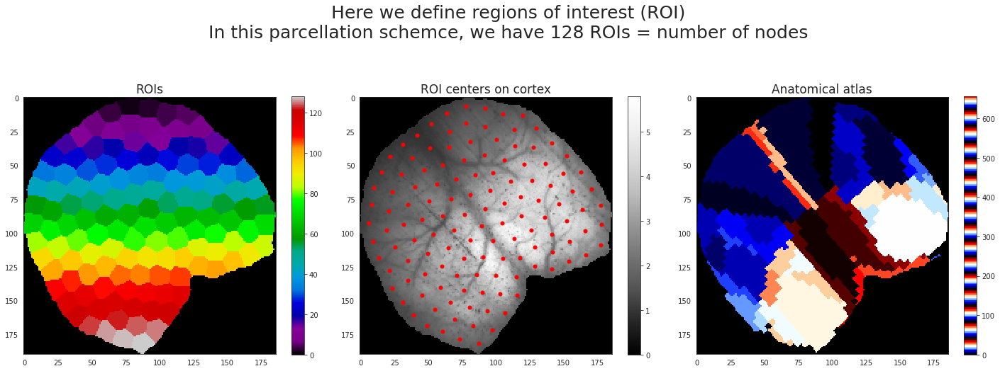
num_pixs_per_roi = {k: len(np.where(load['atlas_kmeans'] == k)[0]) for k in range(1, num_regions+1)}
_ = sns.histplot(num_pixs_per_roi.values(), kde=True, bins=10)
plt.title('num regions: {:d}'.format(num_regions))
plt.xlabel('num pixels in a region')
plt.show()
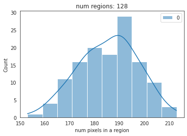
x = np.zeros(load['atlas_kmeans'].shape + (list(load['ca'].values())[0].shape[-1],))
for key, data in load['ca'].items():
num_nan = np.isnan(load['ca'][key]).mean().sum()
if num_nan > 0:
print(key, num_nan)
continue
x[load['atlas_kmeans'] == key] = load['ca'][key]
x.shape
(190, 186, 5500)
t = 1800
res = 1
_slice = x[..., t: t + res * 120]
vminmax = np.max(np.abs(_slice))
sns.set_style('white')
nrows, ncols = 12, 10
fig, axes = plt.subplots(nrows, ncols, figsize=(13.5, 15))
for idx in range(_slice.shape[-1] // res):
i, j = idx//ncols, idx%ncols
axes[i, j].imshow(_slice[..., idx * res], vmin=-vminmax, vmax=vminmax, cmap='bwr', interpolation='none')
axes[i, j].axis('off')
fig.tight_layout()
plt.show()
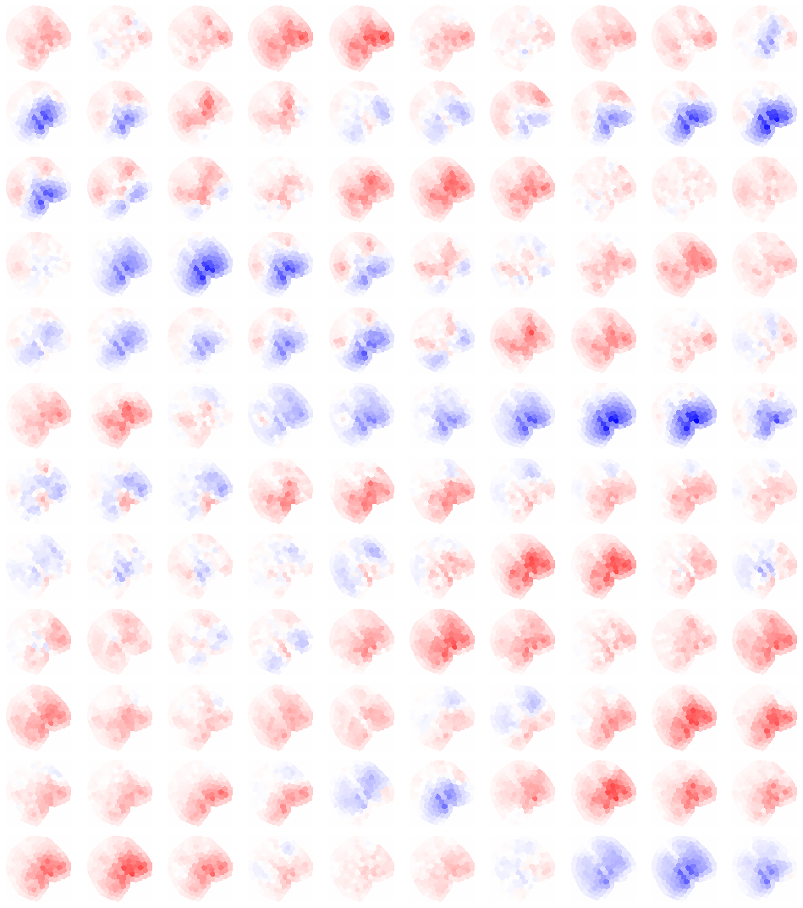
df = pd.DataFrame.from_dict(load['ca'])
node_labels = df.columns.values.tolist()
node_labels = {i: lbl for i, lbl in enumerate(node_labels)}
df.describe()
| 1 | 2 | 3 | 4 | 5 | 6 | 7 | 8 | 9 | 10 | ... | 119 | 120 | 121 | 122 | 123 | 124 | 125 | 126 | 127 | 128 | |
|---|---|---|---|---|---|---|---|---|---|---|---|---|---|---|---|---|---|---|---|---|---|
| count | 5500.000000 | 5500.000000 | 5500.000000 | 5500.000000 | 5500.000000 | 5500.000000 | 5500.000000 | 5500.000000 | 5500.000000 | 5500.000000 | ... | 5500.000000 | 5500.000000 | 5500.000000 | 5500.000000 | 5500.000000 | 5500.000000 | 5500.000000 | 5500.000000 | 5500.000000 | 5500.000000 |
| mean | 7.798880 | 9.520595 | 7.131000 | 12.710832 | 12.746796 | 6.627548 | 10.146741 | 15.847566 | 11.650623 | 19.583149 | ... | 16.659527 | 17.153321 | 9.543558 | 11.780937 | 8.870620 | 13.735455 | 13.661941 | 9.401963 | 10.502899 | 12.142878 |
| std | 24.875385 | 30.259247 | 19.099718 | 32.786682 | 35.865367 | 11.525206 | 40.075206 | 50.424845 | 46.738206 | 63.394058 | ... | 102.240594 | 77.081863 | 30.417967 | 81.839726 | 35.156782 | 76.353094 | 48.145441 | 48.187395 | 44.917977 | 35.849339 |
| min | -76.311890 | -103.358659 | -68.768472 | -116.518565 | -113.629717 | -43.621664 | -129.534244 | -157.058232 | -164.693261 | -200.283706 | ... | -322.182653 | -224.871680 | -90.758845 | -241.672304 | -110.361040 | -226.638952 | -135.122950 | -140.325162 | -131.258650 | -98.528095 |
| 25% | -8.092969 | -10.028809 | -4.208212 | -8.477186 | -11.198517 | -0.045627 | -15.038566 | -17.904991 | -18.552409 | -21.857340 | ... | -51.723718 | -33.960902 | -10.257109 | -44.762890 | -14.551430 | -39.407927 | -19.153194 | -23.939039 | -20.574386 | -12.959658 |
| 50% | 9.910266 | 11.350533 | 9.098249 | 13.966880 | 12.849950 | 7.788853 | 15.116773 | 15.941690 | 16.505702 | 21.206498 | ... | 32.337977 | 26.232385 | 11.654654 | 19.123402 | 12.439727 | 24.797665 | 18.520023 | 14.018539 | 14.918876 | 15.186188 |
| 75% | 24.831137 | 30.624768 | 20.080692 | 34.691298 | 36.989578 | 14.108556 | 38.314134 | 48.802779 | 44.789405 | 61.852105 | ... | 90.494208 | 70.006349 | 31.044141 | 72.560377 | 34.567967 | 69.291110 | 46.861316 | 44.512713 | 42.978186 | 36.997789 |
| max | 96.501237 | 107.337960 | 67.145289 | 129.834084 | 142.494672 | 46.949729 | 122.423706 | 198.931634 | 149.044927 | 272.632123 | ... | 305.092811 | 297.279641 | 101.286836 | 238.649787 | 109.591127 | 223.668584 | 188.696853 | 143.329078 | 139.121244 | 132.465799 |
8 rows × 128 columns
thresholds = [0.84, 0.85, 0.86, 0.87, 0.88, 0.89]
corrs = get_corrs(df, thresholds=thresholds)
plt.imshow(corrs['pearson_corr'], cmap='nipy_spectral')
plt.colorbar()
<matplotlib.colorbar.Colorbar at 0x7f2f06f720a0>
_ = plot_corrs(corrs['pearson'], corrs['spearman'])
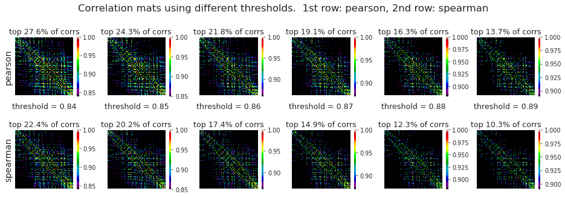
plot_corr_hist(
corr_list=[corrs['pearson_corr'], corrs['spearman_corr']],
labels=['pearson', 'spearman'],
colors=['C0', 'C3'],
)
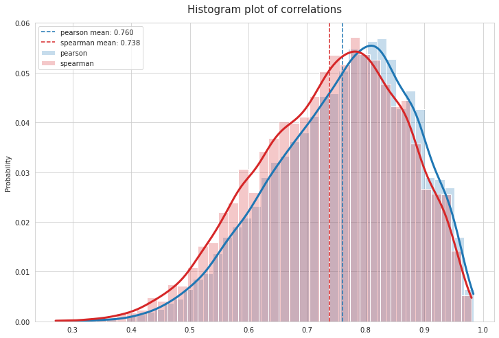
(<Figure size 864x576 with 1 Axes>,
<AxesSubplot:title={'center':'Histogram plot of correlations'}, ylabel='Probability'>)
graphs = {th: nx.from_numpy_matrix(a) for th, a in corrs['spearman'].items()}
results_louvain = run_louvain(graphs[0.86], res=np.logspace(-1, 1, 1001))
selected_idxs = [420, 450, 580, 650]
plot_louvain_results(results_louvain, selected_idxs=selected_idxs)
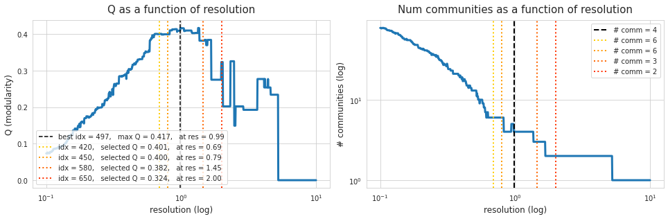
_ = plot_louvain_communities(
pearson=corrs['pearson'],
spearman=corrs['spearman'],
atlas=load['atlas_kmeans'],
modularities=results_louvain['modularities'],
selected_idxs=selected_idxs,
pearson_th=0.88,
spearman_th=0.86,
figsize=(12, 4.5),
colorbar=False, )
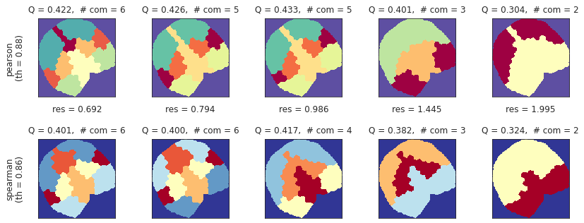
Concanenate¶
data_all = {}
for run in [1, 3, 5, 7]:
data_all[run] = load_organized_data(
folder='atlas-128_unfiltered_unnormalized',#'filtered_low-0.001_high-4.000_ord-2_normalized',
config=config,
subject=6,
session=1,
run=run,
)
for run in [1, 3, 5, 7]:
x = np.zeros(data_all[run]['atlas_kmeans'].shape + (list(data_all[run]['ca'].values())[0].shape[-1],))
for key, time_series in data_all[run]['ca'].items():
num_nan = np.isnan(time_series).sum()
if num_nan > 0:
print(key, num_nan)
continue
x[data_all[run]['atlas_kmeans'] == key] = data_all[run]['ca'][key]
t = 1800
res = 10
_slice = x[..., t: t + res * 120]
vminmax = np.max(np.abs(_slice))
sns.set_style('white')
nrows, ncols = 12, 10
fig, axes = plt.subplots(nrows, ncols, figsize=(10, 12))
for idx in range(_slice.shape[-1] // res):
i, j = idx//ncols, idx%ncols
axes[i, j].imshow(_slice[..., idx * res], vmin=-vminmax, vmax=vminmax, cmap='bwr', interpolation='none')
axes[i, j].axis('off')
fig.tight_layout()
fig.suptitle('RUN: {:d}'.format(run), fontsize=20, y=1.02)
plt.show()
print('\n\n')
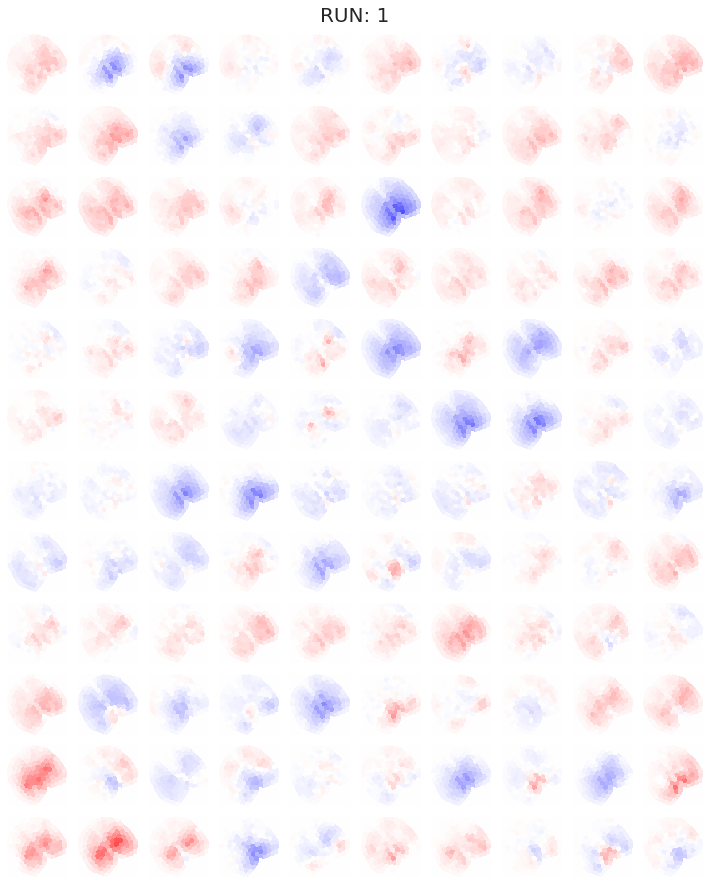
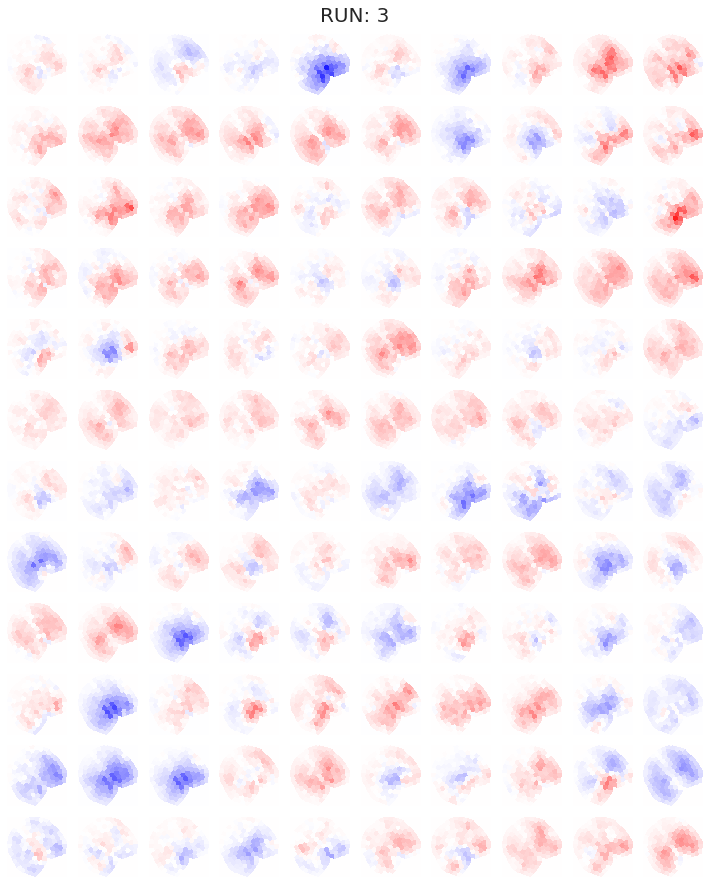
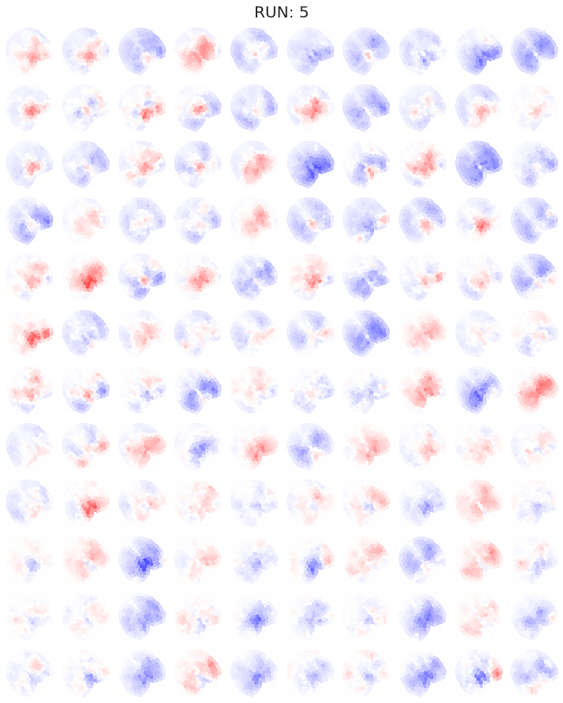
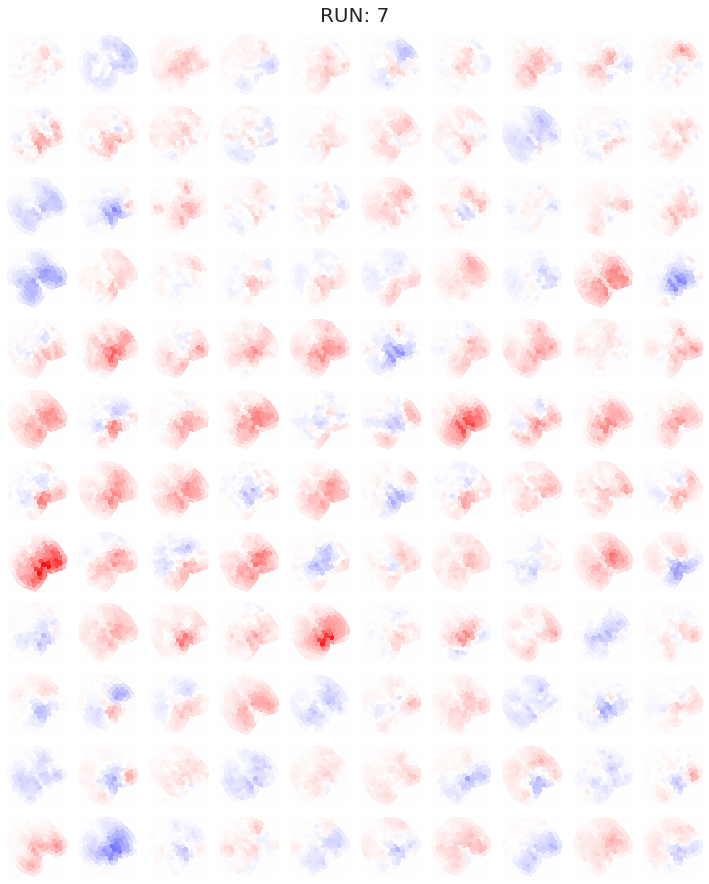
df = pd.DataFrame()
for run, load in data_all.items():
x_dict = data_all[run]['ca'].copy()
x = np.concatenate([item.reshape(1, -1) for item in x_dict.values()])
mean, std = x.mean(), x.std()
x_dict_normalized = {k: (v - mean) / std for k, v in x_dict.items()}
df = pd.concat([df, pd.DataFrame.from_dict(x_dict_normalized)])
node_labels = df.columns.values.tolist()
node_labels = {i: lbl for i, lbl in enumerate(node_labels)}
df.describe()
| 1 | 2 | 3 | 4 | 5 | 6 | 7 | 8 | 9 | 10 | ... | 119 | 120 | 121 | 122 | 123 | 124 | 125 | 126 | 127 | 128 | |
|---|---|---|---|---|---|---|---|---|---|---|---|---|---|---|---|---|---|---|---|---|---|
| count | 22000.000000 | 22000.000000 | 22000.000000 | 22000.000000 | 22000.000000 | 22000.000000 | 22000.000000 | 22000.000000 | 22000.000000 | 22000.000000 | ... | 22000.000000 | 22000.000000 | 22000.000000 | 22000.000000 | 22000.000000 | 22000.000000 | 22000.000000 | 22000.000000 | 22000.000000 | 22000.000000 |
| mean | -0.016388 | -0.017893 | -0.017069 | -0.011585 | -0.014656 | -0.015102 | -0.017255 | -0.010344 | -0.023025 | -0.006268 | ... | -0.035847 | -0.020918 | -0.016273 | -0.037038 | -0.024403 | -0.040073 | -0.022786 | -0.029370 | -0.026138 | -0.014972 |
| std | 0.272262 | 0.317607 | 0.218333 | 0.321354 | 0.368238 | 0.160138 | 0.396327 | 0.498329 | 0.455019 | 0.579010 | ... | 0.964880 | 0.740199 | 0.311767 | 0.776854 | 0.343247 | 0.740836 | 0.485066 | 0.468669 | 0.443533 | 0.363329 |
| min | -0.982600 | -1.168274 | -0.866468 | -1.294176 | -1.266538 | -0.596770 | -1.418697 | -1.754094 | -1.755064 | -2.095558 | ... | -3.591648 | -2.762908 | -1.117423 | -2.491523 | -1.235266 | -2.643039 | -1.706743 | -1.657538 | -1.706881 | -1.342029 |
| 25% | -0.194560 | -0.229806 | -0.154681 | -0.225522 | -0.268099 | -0.114941 | -0.274737 | -0.355402 | -0.323958 | -0.401146 | ... | -0.613654 | -0.465713 | -0.227147 | -0.554875 | -0.250611 | -0.521864 | -0.338272 | -0.341294 | -0.322809 | -0.253642 |
| 50% | -0.017450 | -0.016082 | -0.021818 | -0.014653 | -0.025611 | -0.020104 | -0.006007 | -0.025109 | -0.009366 | -0.017682 | ... | 0.008502 | 0.006448 | -0.019744 | -0.034133 | -0.022015 | -0.027322 | -0.024536 | -0.027346 | -0.025669 | -0.022515 |
| 75% | 0.157393 | 0.189779 | 0.113866 | 0.196925 | 0.224398 | 0.078664 | 0.240798 | 0.313531 | 0.281884 | 0.373030 | ... | 0.585951 | 0.433232 | 0.182956 | 0.473879 | 0.198987 | 0.441731 | 0.275617 | 0.275472 | 0.254116 | 0.206903 |
| max | 1.296868 | 1.456478 | 1.127696 | 1.459808 | 1.787117 | 0.884699 | 1.884244 | 2.448247 | 2.100702 | 2.712541 | ... | 6.417246 | 5.977250 | 1.744478 | 4.805378 | 1.725743 | 4.612843 | 3.824357 | 2.780379 | 2.913108 | 2.410052 |
8 rows × 128 columns
thresholds = [0.80, 0.82, 0.83, 0.84, 0.85, 0.87]
corrs = get_corrs(df, thresholds=thresholds)
plt.imshow(corrs['pearson_corr'], cmap='nipy_spectral')
plt.colorbar()
<matplotlib.colorbar.Colorbar at 0x7f2f06ed1f70>
_ = plot_corrs(corrs['pearson'], corrs['spearman'])
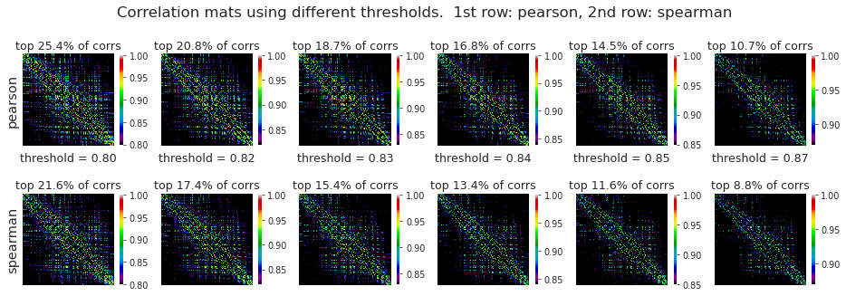
plot_corr_hist(
corr_list=[corrs['pearson_corr'], corrs['spearman_corr']],
labels=['pearson', 'spearman'],
colors=['C0', 'C3'],
)
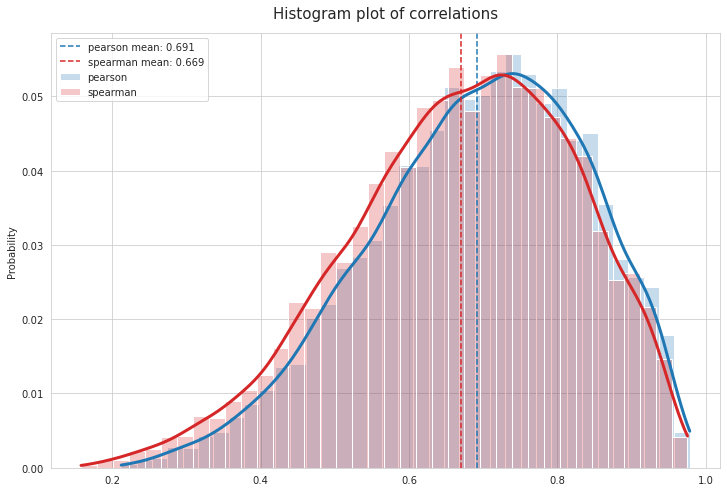
(<Figure size 864x576 with 1 Axes>,
<AxesSubplot:title={'center':'Histogram plot of correlations'}, ylabel='Probability'>)
graphs = {th: nx.from_numpy_matrix(a) for th, a in corrs['spearman'].items()}
results_louvain = run_louvain(graphs[0.82], res=np.logspace(-1, 1, 1001))
selected_idxs = [450, 540, 600, 700]
plot_louvain_results(results_louvain, selected_idxs=selected_idxs)
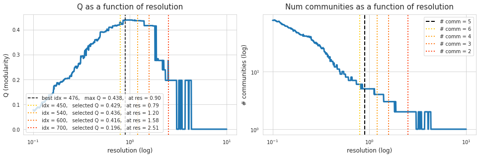
selected_idxs = [450, 540, 600, 620] # [440, 520, 530, 590]
fig, axes = plot_louvain_communities(
pearson=corrs['pearson'],
spearman=corrs['spearman'],
atlas=load['atlas_kmeans'],
modularities=results_louvain['modularities'],
selected_idxs=selected_idxs,
pearson_th=0.83,
spearman_th=0.82,
figsize=(12, 4.5),
colorbar=False, )
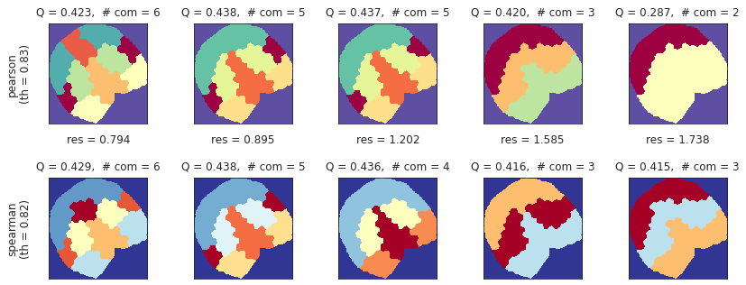
fig.savefig('louvain.png', dpi=300)
spearman_th = 0.82
selected_idxs = [450, 476, 540, 600, 620]
x0 = np.logspace(-1, 1, 1001)
plt.figure(figsize=(12, 4))
final_partition_cmaps = {}
for i, idx in enumerate(selected_idxs):
g = nx.from_numpy_matrix(corrs['spearman'][spearman_th])
coms = cdlib_algorithms.louvain(
g_original=g,
weight='weight',
resolution=x0[idx],
randomize=False,
)
partition = convert('community', 'partition', community=coms.communities)
output = filter_islands(partition, load['atlas_kmeans'], node_labels, min_com_size=3)
q = nx_comm.modularity(g, communities=coms.communities)
plt.subplot(1, len(selected_idxs), i + 1)
plt.imshow(output['comm_mat'], interpolation='none')
plt.title("idx = {:d}\nq = {:.2f}\nnum_comm = {:d}".format(idx, q, len(set(partition.values()))), y=1.1)
num_comm = len(set(partition.values()))
final_partition_cmaps[i] = {
node_labels[node]: (comm_idx + 1) / num_comm
for node, comm_idx in partition.items()
}
plt.tight_layout()
plt.show()
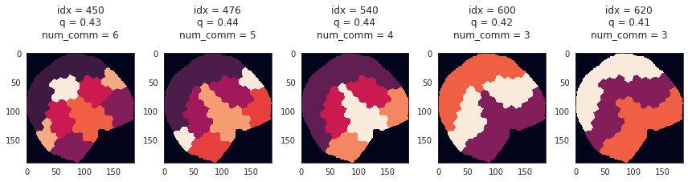
config = Config()
load = load_organized_data(
folder='atlas-128_unfiltered_unnormalized',#'filtered_low-0.001_high-4.000_ord-2_normalized',
config=config,
subject=6,
session=1,
run=1,
)
plt.figure(figsize=(30, 7))
plt.subplot(131)
plt.imshow(load['atlas_kmeans'], cmap='nipy_spectral', interpolation='none')
plt.colorbar(shrink=0.8)
plt.subplot(132)
plt.imshow(load['ref'], cmap='Greys_r', interpolation='none')
for j, i in load['kmeans_centers']:
plt.plot(i, j, marker='o', color='r', markersize=5)
plt.subplot(133)
plt.imshow(load['atlas'], cmap='flag_r', interpolation='none')
plt.colorbar(shrink=0.8)
plt.tight_layout()
# plt.savefig('kmeans_atlas.png', dpi=300)
plt.show()
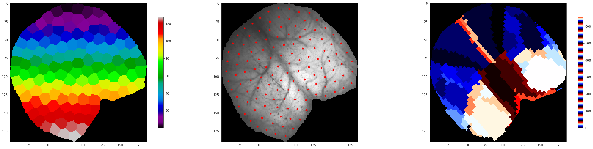
num_regions = max(np.unique((load['atlas_kmeans'])))
num_regions
128
mapping_degenerate = {}
for ii in range(1, num_regions+1):
region_ids = load['atlas'][load['atlas_kmeans'] == ii]
region_ids = [item for item in region_ids if item != 0]
selected_target = collections.Counter(region_ids).most_common()[0][0]
mapping_degenerate[ii] = selected_target
targets_counter = dict(collections.Counter(mapping_degenerate.values()))
_counters = {region_id: 0 for region_id in set(mapping_degenerate.values())}
mapping = {}
for ii, region_id in mapping_degenerate.items():
mapping[ii] = '{:s}_{:d}'.format(config.labels[region_id], _counters[region_id])
_counters[region_id] += 1
mapping
{1: 'R-Secondary motor area (MOs,993)_0',
2: 'R-Primary motor area (MOp,985)_0',
3: 'R-Secondary motor area (MOs,993)_1',
4: 'R-Primary somatosensory area, mouth (SSp-m,345)_0',
5: 'R-Primary somatosensory area, mouth (SSp-m,345)_1',
6: 'R-Secondary motor area (MOs,993)_2',
7: 'R-Secondary motor area (MOs,993)_3',
8: 'R-Primary somatosensory area, nose (SSp-n,353)_0',
9: 'R-Primary motor area (MOp,985)_1',
10: 'R-Primary somatosensory area, upper limb (SSp-ul,369)_0',
11: 'R-Secondary motor area (MOs,993)_4',
12: 'R-Prelimbic area (PL,972)_0',
13: 'R-Primary motor area (MOp,985)_2',
14: 'R-Secondary motor area (MOs,993)_5',
15: 'R-Primary somatosensory area, barrel field (SSp-bfd,329)_0',
16: 'L-Secondary motor area (MOs,993)_0',
17: 'R-Anterior cingulate area, dorsal part (ACAd,39)_0',
18: 'R-Primary somatosensory area, barrel field (SSp-bfd,329)_1',
19: 'R-Primary somatosensory area, upper limb (SSp-ul,369)_1',
20: 'R-Secondary motor area (MOs,993)_6',
21: 'R-Primary motor area (MOp,985)_3',
22: 'R-Supplemental somatosensory area (SSs,378)_0',
23: 'L-Secondary motor area (MOs,993)_1',
24: 'L-Secondary motor area (MOs,993)_2',
25: 'R-Secondary motor area (MOs,993)_7',
26: 'R-Primary somatosensory area, lower limb (SSp-ll,337)_0',
27: 'R-Primary somatosensory area, barrel field (SSp-bfd,329)_2',
28: 'R-Anterior cingulate area, dorsal part (ACAd,39)_1',
29: 'R-Primary somatosensory area, upper limb (SSp-ul,369)_2',
30: 'L-Secondary motor area (MOs,993)_3',
31: 'R-Dorsal auditory area (AUDd,1011)_0',
32: 'L-Secondary motor area (MOs,993)_4',
33: 'R-Primary motor area (MOp,985)_4',
34: 'L-Secondary motor area (MOs,993)_5',
35: 'R-Secondary motor area (MOs,993)_8',
36: 'R-Primary somatosensory area, barrel field (SSp-bfd,329)_3',
37: 'R-Secondary motor area (MOs,993)_9',
38: 'R-Primary somatosensory area, lower limb (SSp-ll,337)_1',
39: 'R-Primary somatosensory area, trunk (SSp-tr,361)_0',
40: 'L-Secondary motor area (MOs,993)_6',
41: 'R-Rostrolateral visual area (VISrl,417)_0',
42: 'L-Primary motor area (MOp,985)_0',
43: 'L-Secondary motor area (MOs,993)_7',
44: 'R-Lateral visual area (VISl,409)_0',
45: 'L-Primary motor area (MOp,985)_1',
46: 'R-Rostrolateral visual area (VISrl,417)_1',
47: 'R-Retrosplenial area, lateral agranular part (RSPagl,894)_0',
48: 'R-Secondary motor area (MOs,993)_10',
49: 'R-Anterior area (VISa,312782546)_0',
50: 'L-Secondary motor area (MOs,993)_8',
51: 'R-Anterior area (VISa,312782546)_1',
52: 'L-Primary motor area (MOp,985)_2',
53: 'R-Retrosplenial area, lateral agranular part (RSPagl,894)_1',
54: 'L-Primary motor area (MOp,985)_3',
55: 'R-Primary visual area (VISp,385)_0',
56: 'R-Lateral visual area (VISl,409)_1',
57: 'L-Primary motor area (MOp,985)_4',
58: 'R-Primary visual area (VISp,385)_1',
59: 'R-Retrosplenial area, dorsal part (RSPd,879)_0',
60: 'L-Primary motor area (MOp,985)_5',
61: 'L-Primary motor area (MOp,985)_6',
62: 'L-Retrosplenial area, dorsal part (RSPd,879)_0',
63: 'R-Retrosplenial area, lateral agranular part (RSPagl,894)_2',
64: 'R-Primary visual area (VISp,385)_2',
65: 'L-Primary somatosensory area, lower limb (SSp-ll,337)_0',
66: 'R-Primary visual area (VISp,385)_3',
67: 'R-Retrosplenial area, dorsal part (RSPd,879)_1',
68: 'L-Primary somatosensory area, mouth (SSp-m,345)_0',
69: 'L-Primary somatosensory area, upper limb (SSp-ul,369)_0',
70: 'R-Primary visual area (VISp,385)_4',
71: 'L-Retrosplenial area, dorsal part (RSPd,879)_1',
72: 'L-Retrosplenial area, lateral agranular part (RSPagl,894)_0',
73: 'R-Retrosplenial area, lateral agranular part (RSPagl,894)_3',
74: 'L-Primary somatosensory area, upper limb (SSp-ul,369)_1',
75: 'R-Primary visual area (VISp,385)_5',
76: 'L-Primary somatosensory area, lower limb (SSp-ll,337)_1',
77: 'R-Primary visual area (VISp,385)_6',
78: 'L-Retrosplenial area, dorsal part (RSPd,879)_2',
79: 'R-Retrosplenial area, dorsal part (RSPd,879)_2',
80: 'L-Primary somatosensory area, upper limb (SSp-ul,369)_2',
81: 'L-Retrosplenial area, dorsal part (RSPd,879)_3',
82: 'L-Primary somatosensory area, mouth (SSp-m,345)_1',
83: 'R-Primary visual area (VISp,385)_7',
84: 'L-Primary somatosensory area, barrel field (SSp-bfd,329)_0',
85: 'R-Primary visual area (VISp,385)_8',
86: 'L-Anterior area (VISa,312782546)_0',
87: 'R-Retrosplenial area, dorsal part (RSPd,879)_3',
88: 'L-Primary somatosensory area, trunk (SSp-tr,361)_0',
89: 'R-Primary visual area (VISp,385)_9',
90: 'R-Primary visual area (VISp,385)_10',
91: 'L-Retrosplenial area, dorsal part (RSPd,879)_4',
92: 'L-Retrosplenial area, dorsal part (RSPd,879)_5',
93: 'L-Primary somatosensory area, nose (SSp-n,353)_0',
94: 'L-Anteromedial visual area (VISam,394)_0',
95: 'R-Retrosplenial area, dorsal part (RSPd,879)_4',
96: 'L-Primary somatosensory area, barrel field (SSp-bfd,329)_1',
97: 'R-Primary visual area (VISp,385)_11',
98: 'L-Anterior area (VISa,312782546)_1',
99: 'R-Retrosplenial area, dorsal part (RSPd,879)_5',
100: 'L-Primary somatosensory area, barrel field (SSp-bfd,329)_2',
101: 'R-Superior colliculus, superficial gray layer (SCsg,842)_0',
102: 'L-Primary somatosensory area, barrel field (SSp-bfd,329)_3',
103: 'L-posteromedial visual area (VISpm,533)_0',
104: 'L-Anteromedial visual area (VISam,394)_1',
105: 'L-Retrosplenial area, dorsal part (RSPd,879)_6',
106: 'L-Retrosplenial area, dorsal part (RSPd,879)_7',
107: 'L-Primary somatosensory area, barrel field (SSp-bfd,329)_4',
108: 'L-Rostrolateral visual area (VISrl,417)_0',
109: 'L-Supplemental somatosensory area (SSs,378)_0',
110: 'L-Primary visual area (VISp,385)_0',
111: 'L-Primary visual area (VISp,385)_1',
112: 'L-Retrosplenial area, lateral agranular part (RSPagl,894)_1',
113: 'L-Primary somatosensory area, barrel field (SSp-bfd,329)_5',
114: 'L-Retrosplenial area, dorsal part (RSPd,879)_8',
115: 'L-Dorsal auditory area (AUDd,1011)_0',
116: 'L-Primary visual area (VISp,385)_2',
117: 'L-Anterolateral visual area (VISal,402)_0',
118: 'L-Primary visual area (VISp,385)_3',
119: 'L-Primary visual area (VISp,385)_4',
120: 'L-Primary visual area (VISp,385)_5',
121: 'L-Primary auditory area (AUDp,1002)_0',
122: 'L-Primary visual area (VISp,385)_6',
123: 'L-Posterior auditory area (AUDpo,1027)_0',
124: 'L-Primary visual area (VISp,385)_7',
125: 'L-Primary visual area (VISp,385)_8',
126: 'L-Lateral visual area (VISl,409)_0',
127: 'L-Lateral visual area (VISl,409)_1',
128: 'L-Primary visual area (VISp,385)_9'}
def extract_info(string):
if 'R-' in string:
hemisphere = 'R'
else:
hemisphere = 'L'
name = string[2:]
shortened_name = '(' + string.split('(')[-1]
processed_name = shortened_name.replace('(', '').replace(')', '').replace(',', '\t')
return hemisphere, name, shortened_name, processed_name
all_r = []
all_l = []
for string in mapping.values():
hemisphere, name, shortened_name, processed_name = extract_info(string)
if hemisphere == 'R':
all_r.append(processed_name)
else:
all_l.append(processed_name)
all_regions = set(all_r).intersection(set(all_l))
all_regions = list(all_regions)
region_heads = set([item.split('\t')[0] for item in all_regions])
region_heads = list(region_heads)
region_heads
['SSp-tr',
'MOp',
'VISrl',
'VISl',
'SSp-bfd',
'RSPd',
'SSp-ul',
'RSPagl',
'VISp',
'MOs',
'AUDd',
'SSp-ll',
'SSs',
'SSp-m',
'SSp-n',
'VISa']
len(region_heads), len(all_regions)
(16, 52)
all_regions
['SSp-n\t353_0',
'MOp\t985_0',
'AUDd\t1011_0',
'MOp\t985_4',
'SSp-m\t345_1',
'MOs\t993_8',
'VISrl\t417_0',
'VISa\t312782546_0',
'VISp\t385_7',
'MOp\t985_2',
'MOs\t993_0',
'VISl\t409_0',
'SSp-bfd\t329_1',
'SSp-ul\t369_1',
'MOs\t993_6',
'RSPagl\t894_1',
'MOs\t993_3',
'VISl\t409_1',
'RSPd\t879_2',
'MOp\t985_1',
'RSPd\t879_3',
'VISp\t385_2',
'VISp\t385_0',
'MOs\t993_4',
'SSp-bfd\t329_2',
'VISp\t385_3',
'MOs\t993_2',
'MOs\t993_1',
'SSp-ll\t337_0',
'RSPd\t879_1',
'MOp\t985_3',
'SSp-bfd\t329_0',
'VISp\t385_4',
'SSp-ul\t369_0',
'SSp-ll\t337_1',
'SSp-m\t345_0',
'SSs\t378_0',
'MOs\t993_7',
'VISp\t385_8',
'VISp\t385_9',
'RSPd\t879_0',
'SSp-bfd\t329_3',
'RSPd\t879_4',
'SSp-ul\t369_2',
'SSp-tr\t361_0',
'VISp\t385_6',
'VISp\t385_1',
'RSPd\t879_5',
'RSPagl\t894_0',
'VISa\t312782546_1',
'MOs\t993_5',
'VISp\t385_5']
r2i, i2r = {}, {}
for ii, string in mapping.items():
processed_name = extract_info(string)[-1]
if processed_name not in all_regions:
continue
else:
r2i[processed_name] = ii
for region, ii in r2i.items():
i2r[ii] = region
len(r2i), len(i2r)
(52, 52)
palette = sns.color_palette('nipy_spectral', n_colors=num_regions)
colors_list = list(palette)
colors_rgb = []
for color in colors_list:
colors_rgb.append(tuple(int(np.round(x * 255)) for x in color))
delimiter = ' '
lines_map = []
for ii, long_name in mapping.items():
hemisphere, name, shortened_name, processed_name = extract_info(long_name)
if hemisphere == 'L':
continue
line = delimiter.join(
[processed_name.split('\t')[0],
processed_name.split('\t')[1],
str(colors_rgb[ii-1][0]),
str(colors_rgb[ii-1][1]),
str(colors_rgb[ii-1][2]),
str(final_partition_cmaps[0][ii]),
str(final_partition_cmaps[1][ii]),
str(final_partition_cmaps[2][ii]),
str(final_partition_cmaps[3][ii]),
str(final_partition_cmaps[4][ii]),]
)
line = line + '\n'
lines_map.append(line)
lines_map = sorted(lines_map)
len(lines_map)
63
circos_dir = pjoin(os.environ['HOME'], 'Documents/workspaces/circos/circos-projects/mouse')
with open(pjoin(circos_dir, 'map.txt'), 'w') as f:
for line in lines_map:
f.write(line)
a = corrs['pearson_corr'].copy()
viz_th = 0.8
a[a < viz_th] = 0.
g = nx.from_numpy_matrix(a)
lines_links = []
for i, j, d in g.edges(data=True):
long_name_i = mapping[node_labels[i]]
long_name_j = mapping[node_labels[j]]
hemisphere_i, name_i, shortened_name_i, processed_name_i = extract_info(long_name_i)
hemisphere_j, name_j, shortened_name_j, processed_name_j = extract_info(long_name_j)
if 0.7 <= d['weight'] < 0.9:
edge_type = 0
elif 0.9 <= d['weight']:
edge_type = 1
line = delimiter.join(
[hemisphere_i.lower(),
processed_name_i.split('\t')[-1],
hemisphere_j.lower(),
processed_name_j.split('\t')[-1],
str(edge_type),
str(d['weight']),]
)
line = line + '\n'
cond_i = any(map(lambda x: delimiter.join(processed_name_i.split('\t')) in x, lines_map))
cond_j = any(map(lambda x: delimiter.join(processed_name_j.split('\t')) in x, lines_map))
cond_inter_region_1 = processed_name_i.split('\t')[0] != processed_name_j.split('\t')[0]
cond_inter_region_2 = processed_name_i.split('\t')[1].split('_')[0] != processed_name_j.split('\t')[1].split('_')[0]
cond_inter_hemisphere = hemisphere_i != hemisphere_j
if cond_i and cond_j and cond_inter_region_1 and cond_inter_region_2 and cond_inter_hemisphere:
lines_links.append(line)
len(lines_links)
511
circos_dir = pjoin(os.environ['HOME'], 'Documents/workspaces/circos/circos-projects/mouse')
with open(pjoin(circos_dir, 'map.links.txt'), 'w') as f:
for line in lines_links:
f.write(line)
mapping
{1: 'R-Secondary motor area (MOs,993)_0',
2: 'R-Primary motor area (MOp,985)_0',
3: 'R-Primary motor area (MOp,985)_1',
4: 'R-Secondary motor area (MOs,993)_1',
5: 'R-Primary somatosensory area, mouth (SSp-m,345)_0',
6: 'R-Secondary motor area (MOs,993)_2',
7: 'R-Primary somatosensory area, mouth (SSp-m,345)_1',
8: 'R-Primary somatosensory area, mouth (SSp-m,345)_2',
9: 'R-Secondary motor area (MOs,993)_3',
10: 'R-Primary motor area (MOp,985)_2',
11: 'R-Primary motor area (MOp,985)_3',
12: 'R-Secondary motor area (MOs,993)_4',
13: 'R-Secondary motor area (MOs,993)_5',
14: 'R-Primary somatosensory area, nose (SSp-n,353)_0',
15: 'R-Primary somatosensory area, upper limb (SSp-ul,369)_0',
16: 'R-Secondary motor area (MOs,993)_6',
17: 'R-Primary somatosensory area, upper limb (SSp-ul,369)_1',
18: 'R-Secondary motor area (MOs,993)_7',
19: 'R-Primary motor area (MOp,985)_4',
20: 'R-Prelimbic area (PL,972)_0',
21: 'R-Secondary motor area (MOs,993)_8',
22: 'R-Primary somatosensory area, nose (SSp-n,353)_1',
23: 'R-Primary somatosensory area, nose (SSp-n,353)_2',
24: 'R-Primary motor area (MOp,985)_5',
25: 'R-Primary somatosensory area, upper limb (SSp-ul,369)_2',
26: 'R-Secondary motor area (MOs,993)_9',
27: 'R-Secondary motor area (MOs,993)_10',
28: 'R-Primary somatosensory area, barrel field (SSp-bfd,329)_0',
29: 'L-Secondary motor area (MOs,993)_0',
30: 'R-Primary somatosensory area, barrel field (SSp-bfd,329)_1',
31: 'R-Secondary motor area (MOs,993)_11',
32: 'R-Secondary motor area (MOs,993)_12',
33: 'R-Primary motor area (MOp,985)_6',
34: 'L-Secondary motor area (MOs,993)_1',
35: 'R-Primary somatosensory area, upper limb (SSp-ul,369)_3',
36: 'R-Primary somatosensory area, unassigned (SSp-un,182305689)_0',
37: 'R-Supplemental somatosensory area (SSs,378)_0',
38: 'L-Secondary motor area (MOs,993)_2',
39: 'R-Primary somatosensory area, barrel field (SSp-bfd,329)_2',
40: 'R-Anterior cingulate area, dorsal part (ACAd,39)_0',
41: 'R-Secondary motor area (MOs,993)_13',
42: 'L-Secondary motor area (MOs,993)_3',
43: 'R-Primary motor area (MOp,985)_7',
44: 'R-Primary somatosensory area, lower limb (SSp-ll,337)_0',
45: 'R-Primary somatosensory area, barrel field (SSp-bfd,329)_3',
46: 'R-Supplemental somatosensory area (SSs,378)_1',
47: 'L-Secondary motor area (MOs,993)_4',
48: 'R-Secondary motor area (MOs,993)_14',
49: 'L-Secondary motor area (MOs,993)_5',
50: 'R-Secondary motor area (MOs,993)_15',
51: 'R-Primary somatosensory area, upper limb (SSp-ul,369)_4',
52: 'L-Secondary motor area (MOs,993)_6',
53: 'R-Primary somatosensory area, lower limb (SSp-ll,337)_1',
54: 'R-Primary somatosensory area, barrel field (SSp-bfd,329)_4',
55: 'R-Primary somatosensory area, barrel field (SSp-bfd,329)_5',
56: 'L-Secondary motor area (MOs,993)_7',
57: 'R-Anterior cingulate area, dorsal part (ACAd,39)_1',
58: 'R-Dorsal auditory area (AUDd,1011)_0',
59: 'L-Secondary motor area (MOs,993)_8',
60: 'R-Primary motor area (MOp,985)_8',
61: 'R-Secondary motor area (MOs,993)_16',
62: 'R-Primary somatosensory area, lower limb (SSp-ll,337)_2',
63: 'R-Primary somatosensory area, barrel field (SSp-bfd,329)_6',
64: 'L-Secondary motor area (MOs,993)_9',
65: 'L-Secondary motor area (MOs,993)_10',
66: 'R-Primary somatosensory area, barrel field (SSp-bfd,329)_7',
67: 'R-Primary somatosensory area, barrel field (SSp-bfd,329)_8',
68: 'R-Dorsal auditory area (AUDd,1011)_1',
69: 'L-Secondary motor area (MOs,993)_11',
70: 'L-Secondary motor area (MOs,993)_12',
71: 'R-Secondary motor area (MOs,993)_17',
72: 'R-Primary somatosensory area, lower limb (SSp-ll,337)_3',
73: 'R-Primary somatosensory area, lower limb (SSp-ll,337)_4',
74: 'L-Secondary motor area (MOs,993)_13',
75: 'L-Secondary motor area (MOs,993)_14',
76: 'R-Primary motor area (MOp,985)_9',
77: 'R-Anterolateral visual area (VISal,402)_0',
78: 'R-Anterior cingulate area, dorsal part (ACAd,39)_2',
79: 'R-Anterior area (VISa,312782546)_0',
80: 'R-Primary somatosensory area, barrel field (SSp-bfd,329)_9',
81: 'R-Posterior auditory area (AUDpo,1027)_0',
82: 'L-Primary motor area (MOp,985)_0',
83: 'L-Primary motor area (MOp,985)_1',
84: 'L-Secondary motor area (MOs,993)_15',
85: 'R-Primary somatosensory area, trunk (SSp-tr,361)_0',
86: 'L-Secondary motor area (MOs,993)_16',
87: 'R-Secondary motor area (MOs,993)_18',
88: 'L-Secondary motor area (MOs,993)_17',
89: 'R-Retrosplenial area, lateral agranular part (RSPagl,894)_0',
90: 'R-Primary somatosensory area, trunk (SSp-tr,361)_1',
91: 'R-Anterolateral visual area (VISal,402)_1',
92: 'L-Secondary motor area (MOs,993)_18',
93: 'L-Secondary motor area (MOs,993)_19',
94: 'R-Rostrolateral visual area (VISrl,417)_0',
95: 'R-Secondary motor area (MOs,993)_19',
96: 'R-Anterior area (VISa,312782546)_1',
97: 'R-Primary visual area (VISp,385)_0',
98: 'R-Lateral visual area (VISl,409)_0',
99: 'L-Primary motor area (MOp,985)_2',
100: 'L-Secondary motor area (MOs,993)_20',
101: 'R-Anterior area (VISa,312782546)_2',
102: 'L-Primary motor area (MOp,985)_3',
103: 'L-Primary motor area (MOp,985)_4',
104: 'L-Primary motor area (MOp,985)_5',
105: 'L-Primary motor area (MOp,985)_6',
106: 'R-Anterior cingulate area, dorsal part (ACAd,39)_3',
107: 'L-Secondary motor area (MOs,993)_21',
108: 'R-Retrosplenial area, dorsal part (RSPd,879)_0',
109: 'R-Retrosplenial area, lateral agranular part (RSPagl,894)_1',
110: 'R-Primary visual area (VISp,385)_1',
111: 'L-Primary motor area (MOp,985)_7',
112: 'L-Secondary motor area (MOs,993)_22',
113: 'R-Retrosplenial area, dorsal part (RSPd,879)_1',
114: 'R-Primary visual area (VISp,385)_2',
115: 'R-Primary visual area (VISp,385)_3',
116: 'R-Lateral visual area (VISl,409)_1',
117: 'R-Anteromedial visual area (VISam,394)_0',
118: 'R-Primary visual area (VISp,385)_4',
119: 'L-Primary motor area (MOp,985)_8',
120: 'L-Primary motor area (MOp,985)_9',
121: 'L-Secondary motor area (MOs,993)_23',
122: 'R-Anteromedial visual area (VISam,394)_1',
123: 'L-Primary somatosensory area, mouth (SSp-m,345)_0',
124: 'L-Primary motor area (MOp,985)_10',
125: 'L-Primary motor area (MOp,985)_11',
126: 'R-Primary visual area (VISp,385)_5',
127: 'L-Retrosplenial area, dorsal part (RSPd,879)_0',
128: 'R-Primary visual area (VISp,385)_6',
129: 'R-Retrosplenial area, dorsal part (RSPd,879)_2',
130: 'R-Retrosplenial area, ventral part (RSPv,886)_0',
131: 'R-Retrosplenial area, dorsal part (RSPd,879)_3',
132: 'R-Retrosplenial area, lateral agranular part (RSPagl,894)_2',
133: 'R-Primary visual area (VISp,385)_7',
134: 'R-posteromedial visual area (VISpm,533)_0',
135: 'L-Primary somatosensory area, upper limb (SSp-ul,369)_0',
136: 'L-Primary motor area (MOp,985)_12',
137: 'R-Anteromedial visual area (VISam,394)_2',
138: 'L-Primary somatosensory area, upper limb (SSp-ul,369)_1',
139: 'R-Primary visual area (VISp,385)_8',
140: 'L-Primary somatosensory area, lower limb (SSp-ll,337)_0',
141: 'R-Primary visual area (VISp,385)_9',
142: 'L-Primary somatosensory area, mouth (SSp-m,345)_1',
143: 'L-Primary somatosensory area, mouth (SSp-m,345)_2',
144: 'L-Retrosplenial area, dorsal part (RSPd,879)_1',
145: 'L-Primary somatosensory area, lower limb (SSp-ll,337)_1',
146: 'R-Primary visual area (VISp,385)_10',
147: 'L-Retrosplenial area, dorsal part (RSPd,879)_2',
148: 'R-Primary visual area (VISp,385)_11',
149: 'R-Retrosplenial area, ventral part (RSPv,886)_1',
150: 'L-Primary somatosensory area, upper limb (SSp-ul,369)_2',
151: 'R-posteromedial visual area (VISpm,533)_1',
152: 'R-Retrosplenial area, dorsal part (RSPd,879)_4',
153: 'R-Retrosplenial area, dorsal part (RSPd,879)_5',
154: 'L-Primary somatosensory area, upper limb (SSp-ul,369)_3',
155: 'L-Primary somatosensory area, trunk (SSp-tr,361)_0',
156: 'R-Primary visual area (VISp,385)_12',
157: 'R-Primary visual area (VISp,385)_13',
158: 'L-Primary somatosensory area, lower limb (SSp-ll,337)_2',
159: 'R-Primary visual area (VISp,385)_14',
160: 'L-Primary somatosensory area, mouth (SSp-m,345)_3',
161: 'L-Retrosplenial area, dorsal part (RSPd,879)_3',
162: 'L-Primary somatosensory area, nose (SSp-n,353)_0',
163: 'R-Primary visual area (VISp,385)_15',
164: 'L-Retrosplenial area, lateral agranular part (RSPagl,894)_0',
165: 'L-Retrosplenial area, dorsal part (RSPd,879)_4',
166: 'L-Primary somatosensory area, trunk (SSp-tr,361)_1',
167: 'R-Primary visual area (VISp,385)_16',
168: 'R-Retrosplenial area, ventral part (RSPv,886)_2',
169: 'L-Primary somatosensory area, unassigned (SSp-un,182305689)_0',
170: 'R-Retrosplenial area, dorsal part (RSPd,879)_6',
171: 'R-Retrosplenial area, dorsal part (RSPd,879)_7',
172: 'R-posteromedial visual area (VISpm,533)_2',
173: 'R-Primary visual area (VISp,385)_17',
174: 'L-Primary somatosensory area, barrel field (SSp-bfd,329)_0',
175: 'L-Primary somatosensory area, upper limb (SSp-ul,369)_4',
176: 'L-Anterior area (VISa,312782546)_0',
177: 'R-Primary visual area (VISp,385)_18',
178: 'L-Primary somatosensory area, nose (SSp-n,353)_1',
179: 'L-Retrosplenial area, lateral agranular part (RSPagl,894)_1',
180: 'L-Retrosplenial area, dorsal part (RSPd,879)_5',
181: 'L-Primary somatosensory area, nose (SSp-n,353)_2',
182: 'L-Primary somatosensory area, trunk (SSp-tr,361)_2',
183: 'L-Retrosplenial area, dorsal part (RSPd,879)_6',
184: 'R-Primary visual area (VISp,385)_19',
185: 'R-Midbrain, sensory related (MBsen,339)_0',
186: 'L-Retrosplenial area, ventral part (RSPv,886)_0',
187: 'R-Retrosplenial area, dorsal part (RSPd,879)_8',
188: 'R-Retrosplenial area, dorsal part (RSPd,879)_9',
189: 'R-Retrosplenial area, lateral agranular part (RSPagl,894)_3',
190: 'L-Primary somatosensory area, barrel field (SSp-bfd,329)_1',
191: 'L-Primary somatosensory area, barrel field (SSp-bfd,329)_2',
192: 'L-Anterior area (VISa,312782546)_1',
193: 'L-Anteromedial visual area (VISam,394)_0',
194: 'R-Midbrain, sensory related (MBsen,339)_1',
195: 'L-Primary somatosensory area, barrel field (SSp-bfd,329)_3',
196: 'L-Primary somatosensory area, nose (SSp-n,353)_3',
197: 'L-Anteromedial visual area (VISam,394)_1',
198: 'L-Superior colliculus, superficial gray layer (SCsg,842)_0',
199: 'L-Retrosplenial area, dorsal part (RSPd,879)_7',
200: 'R-Retrosplenial area, lateral agranular part (RSPagl,894)_4',
201: 'L-Anterior area (VISa,312782546)_2',
202: 'L-Retrosplenial area, lateral agranular part (RSPagl,894)_2',
203: 'L-Primary somatosensory area, barrel field (SSp-bfd,329)_4',
204: 'R-Superior colliculus, superficial gray layer (SCsg,842)_0',
205: 'R-Superior colliculus, superficial gray layer (SCsg,842)_1',
206: 'L-Primary somatosensory area, barrel field (SSp-bfd,329)_5',
207: 'L-Primary visual area (VISp,385)_0',
208: 'L-posteromedial visual area (VISpm,533)_0',
209: 'L-Retrosplenial area, dorsal part (RSPd,879)_8',
210: 'L-Primary somatosensory area, barrel field (SSp-bfd,329)_6',
211: 'L-Primary somatosensory area, barrel field (SSp-bfd,329)_7',
212: 'L-Retrosplenial area, lateral agranular part (RSPagl,894)_3',
213: 'L-Rostrolateral visual area (VISrl,417)_0',
214: 'L-posteromedial visual area (VISpm,533)_1',
215: 'L-Superior colliculus, superficial gray layer (SCsg,842)_1',
216: 'L-Primary somatosensory area, barrel field (SSp-bfd,329)_8',
217: 'L-posteromedial visual area (VISpm,533)_2',
218: 'L-Supplemental somatosensory area (SSs,378)_0',
219: 'L-Primary visual area (VISp,385)_1',
220: 'L-Primary visual area (VISp,385)_2',
221: 'L-Retrosplenial area, lateral agranular part (RSPagl,894)_4',
222: 'L-Supplemental somatosensory area (SSs,378)_1',
223: 'L-Primary somatosensory area, barrel field (SSp-bfd,329)_9',
224: 'L-Rostrolateral visual area (VISrl,417)_1',
225: 'L-posteromedial visual area (VISpm,533)_3',
226: 'L-Superior colliculus, superficial gray layer (SCsg,842)_2',
227: 'L-Primary visual area (VISp,385)_3',
228: 'L-Dorsal auditory area (AUDd,1011)_0',
229: 'L-Primary visual area (VISp,385)_4',
230: 'L-Primary visual area (VISp,385)_5',
231: 'L-Primary visual area (VISp,385)_6',
232: 'L-Primary visual area (VISp,385)_7',
233: 'L-Retrosplenial area, lateral agranular part (RSPagl,894)_5',
234: 'L-Dorsal auditory area (AUDd,1011)_1',
235: 'L-Anterolateral visual area (VISal,402)_0',
236: 'L-Primary visual area (VISp,385)_8',
237: 'L-Primary auditory area (AUDp,1002)_0',
238: 'L-Primary visual area (VISp,385)_9',
239: 'L-Primary visual area (VISp,385)_10',
240: 'L-Primary visual area (VISp,385)_11',
241: 'L-Primary visual area (VISp,385)_12',
242: 'L-Lateral visual area (VISl,409)_0',
243: 'L-Primary visual area (VISp,385)_13',
244: 'L-Primary auditory area (AUDp,1002)_1',
245: 'L-Lateral visual area (VISl,409)_1',
246: 'L-Posterior auditory area (AUDpo,1027)_0',
247: 'L-Primary visual area (VISp,385)_14',
248: 'L-Lateral visual area (VISl,409)_2',
249: 'L-Primary visual area (VISp,385)_15',
250: 'L-Primary visual area (VISp,385)_16',
251: 'L-Temporal association areas (TEa,541)_0',
252: 'L-Lateral visual area (VISl,409)_3',
253: 'L-Primary visual area (VISp,385)_17',
254: 'L-Primary visual area (VISp,385)_18',
255: 'L-Lateral visual area (VISl,409)_4',
256: 'L-Posterolateral visual area (VISpl,425)_0'}
for region_head in region_heads:
print(region_head)
SSs
MOs
AUDpo
RSPd
VISl
RSPagl
SSp-n
VISal
SSp-m
VISp
VISa
VISpm
SSp-bfd
AUDd
SSp-un
SSp-ll
SSp-ul
RSPv
VISam
MOp
SSp-tr
VISrl
SCsg
#line = "{:s}{:s}{:s}\t{:s}\t{:d}\t{:.4f}"
#line = line.format(
hemisphere_i.lower(),
processed_name_i.split('\t')[-1],
hemisphere_j.lower(),
processed_name_j.split('\t')[-1],
edge_type,
d['weight']
)
hemisphere_i
'L'
with open(pjoin(dirdir, 'map.links.txt'), 'r') as f:
read_lines = f.readlines()
print(read_lines[3])
r SbCG/S r SupTGLp 1 0.45523726797073
mapping
{1: 'R-Secondary motor area (MOs,993)_0',
2: 'R-Primary motor area (MOp,985)_0',
3: 'R-Primary motor area (MOp,985)_1',
4: 'R-Secondary motor area (MOs,993)_1',
5: 'R-Primary somatosensory area, mouth (SSp-m,345)_0',
6: 'R-Secondary motor area (MOs,993)_2',
7: 'R-Primary somatosensory area, mouth (SSp-m,345)_1',
8: 'R-Primary somatosensory area, mouth (SSp-m,345)_2',
9: 'R-Secondary motor area (MOs,993)_3',
10: 'R-Primary motor area (MOp,985)_2',
11: 'R-Primary motor area (MOp,985)_3',
12: 'R-Secondary motor area (MOs,993)_4',
13: 'R-Secondary motor area (MOs,993)_5',
14: 'R-Primary somatosensory area, nose (SSp-n,353)_0',
15: 'R-Primary somatosensory area, upper limb (SSp-ul,369)_0',
16: 'R-Secondary motor area (MOs,993)_6',
17: 'R-Primary somatosensory area, upper limb (SSp-ul,369)_1',
18: 'R-Secondary motor area (MOs,993)_7',
19: 'R-Primary motor area (MOp,985)_4',
20: 'R-Prelimbic area (PL,972)_0',
21: 'R-Secondary motor area (MOs,993)_8',
22: 'R-Primary somatosensory area, nose (SSp-n,353)_1',
23: 'R-Primary somatosensory area, nose (SSp-n,353)_2',
24: 'R-Primary motor area (MOp,985)_5',
25: 'R-Primary somatosensory area, upper limb (SSp-ul,369)_2',
26: 'R-Secondary motor area (MOs,993)_9',
27: 'R-Secondary motor area (MOs,993)_10',
28: 'R-Primary somatosensory area, barrel field (SSp-bfd,329)_0',
29: 'L-Secondary motor area (MOs,993)_0',
30: 'R-Primary somatosensory area, barrel field (SSp-bfd,329)_1',
31: 'R-Secondary motor area (MOs,993)_11',
32: 'R-Secondary motor area (MOs,993)_12',
33: 'R-Primary motor area (MOp,985)_6',
34: 'L-Secondary motor area (MOs,993)_1',
35: 'R-Primary somatosensory area, upper limb (SSp-ul,369)_3',
36: 'R-Primary somatosensory area, unassigned (SSp-un,182305689)_0',
37: 'R-Supplemental somatosensory area (SSs,378)_0',
38: 'L-Secondary motor area (MOs,993)_2',
39: 'R-Primary somatosensory area, barrel field (SSp-bfd,329)_2',
40: 'R-Anterior cingulate area, dorsal part (ACAd,39)_0',
41: 'R-Secondary motor area (MOs,993)_13',
42: 'L-Secondary motor area (MOs,993)_3',
43: 'R-Primary motor area (MOp,985)_7',
44: 'R-Primary somatosensory area, lower limb (SSp-ll,337)_0',
45: 'R-Primary somatosensory area, barrel field (SSp-bfd,329)_3',
46: 'R-Supplemental somatosensory area (SSs,378)_1',
47: 'L-Secondary motor area (MOs,993)_4',
48: 'R-Secondary motor area (MOs,993)_14',
49: 'L-Secondary motor area (MOs,993)_5',
50: 'R-Secondary motor area (MOs,993)_15',
51: 'R-Primary somatosensory area, upper limb (SSp-ul,369)_4',
52: 'L-Secondary motor area (MOs,993)_6',
53: 'R-Primary somatosensory area, lower limb (SSp-ll,337)_1',
54: 'R-Primary somatosensory area, barrel field (SSp-bfd,329)_4',
55: 'R-Primary somatosensory area, barrel field (SSp-bfd,329)_5',
56: 'L-Secondary motor area (MOs,993)_7',
57: 'R-Anterior cingulate area, dorsal part (ACAd,39)_1',
58: 'R-Dorsal auditory area (AUDd,1011)_0',
59: 'L-Secondary motor area (MOs,993)_8',
60: 'R-Primary motor area (MOp,985)_8',
61: 'R-Secondary motor area (MOs,993)_16',
62: 'R-Primary somatosensory area, lower limb (SSp-ll,337)_2',
63: 'R-Primary somatosensory area, barrel field (SSp-bfd,329)_6',
64: 'L-Secondary motor area (MOs,993)_9',
65: 'L-Secondary motor area (MOs,993)_10',
66: 'R-Primary somatosensory area, barrel field (SSp-bfd,329)_7',
67: 'R-Primary somatosensory area, barrel field (SSp-bfd,329)_8',
68: 'R-Dorsal auditory area (AUDd,1011)_1',
69: 'L-Secondary motor area (MOs,993)_11',
70: 'L-Secondary motor area (MOs,993)_12',
71: 'R-Secondary motor area (MOs,993)_17',
72: 'R-Primary somatosensory area, lower limb (SSp-ll,337)_3',
73: 'R-Primary somatosensory area, lower limb (SSp-ll,337)_4',
74: 'L-Secondary motor area (MOs,993)_13',
75: 'L-Secondary motor area (MOs,993)_14',
76: 'R-Primary motor area (MOp,985)_9',
77: 'R-Anterolateral visual area (VISal,402)_0',
78: 'R-Anterior cingulate area, dorsal part (ACAd,39)_2',
79: 'R-Anterior area (VISa,312782546)_0',
80: 'R-Primary somatosensory area, barrel field (SSp-bfd,329)_9',
81: 'R-Posterior auditory area (AUDpo,1027)_0',
82: 'L-Primary motor area (MOp,985)_0',
83: 'L-Primary motor area (MOp,985)_1',
84: 'L-Secondary motor area (MOs,993)_15',
85: 'R-Primary somatosensory area, trunk (SSp-tr,361)_0',
86: 'L-Secondary motor area (MOs,993)_16',
87: 'R-Secondary motor area (MOs,993)_18',
88: 'L-Secondary motor area (MOs,993)_17',
89: 'R-Retrosplenial area, lateral agranular part (RSPagl,894)_0',
90: 'R-Primary somatosensory area, trunk (SSp-tr,361)_1',
91: 'R-Anterolateral visual area (VISal,402)_1',
92: 'L-Secondary motor area (MOs,993)_18',
93: 'L-Secondary motor area (MOs,993)_19',
94: 'R-Rostrolateral visual area (VISrl,417)_0',
95: 'R-Secondary motor area (MOs,993)_19',
96: 'R-Anterior area (VISa,312782546)_1',
97: 'R-Primary visual area (VISp,385)_0',
98: 'R-Lateral visual area (VISl,409)_0',
99: 'L-Primary motor area (MOp,985)_2',
100: 'L-Secondary motor area (MOs,993)_20',
101: 'R-Anterior area (VISa,312782546)_2',
102: 'L-Primary motor area (MOp,985)_3',
103: 'L-Primary motor area (MOp,985)_4',
104: 'L-Primary motor area (MOp,985)_5',
105: 'L-Primary motor area (MOp,985)_6',
106: 'R-Anterior cingulate area, dorsal part (ACAd,39)_3',
107: 'L-Secondary motor area (MOs,993)_21',
108: 'R-Retrosplenial area, dorsal part (RSPd,879)_0',
109: 'R-Retrosplenial area, lateral agranular part (RSPagl,894)_1',
110: 'R-Primary visual area (VISp,385)_1',
111: 'L-Primary motor area (MOp,985)_7',
112: 'L-Secondary motor area (MOs,993)_22',
113: 'R-Retrosplenial area, dorsal part (RSPd,879)_1',
114: 'R-Primary visual area (VISp,385)_2',
115: 'R-Primary visual area (VISp,385)_3',
116: 'R-Lateral visual area (VISl,409)_1',
117: 'R-Anteromedial visual area (VISam,394)_0',
118: 'R-Primary visual area (VISp,385)_4',
119: 'L-Primary motor area (MOp,985)_8',
120: 'L-Primary motor area (MOp,985)_9',
121: 'L-Secondary motor area (MOs,993)_23',
122: 'R-Anteromedial visual area (VISam,394)_1',
123: 'L-Primary somatosensory area, mouth (SSp-m,345)_0',
124: 'L-Primary motor area (MOp,985)_10',
125: 'L-Primary motor area (MOp,985)_11',
126: 'R-Primary visual area (VISp,385)_5',
127: 'L-Retrosplenial area, dorsal part (RSPd,879)_0',
128: 'R-Primary visual area (VISp,385)_6',
129: 'R-Retrosplenial area, dorsal part (RSPd,879)_2',
130: 'R-Retrosplenial area, ventral part (RSPv,886)_0',
131: 'R-Retrosplenial area, dorsal part (RSPd,879)_3',
132: 'R-Retrosplenial area, lateral agranular part (RSPagl,894)_2',
133: 'R-Primary visual area (VISp,385)_7',
134: 'R-posteromedial visual area (VISpm,533)_0',
135: 'L-Primary somatosensory area, upper limb (SSp-ul,369)_0',
136: 'L-Primary motor area (MOp,985)_12',
137: 'R-Anteromedial visual area (VISam,394)_2',
138: 'L-Primary somatosensory area, upper limb (SSp-ul,369)_1',
139: 'R-Primary visual area (VISp,385)_8',
140: 'L-Primary somatosensory area, lower limb (SSp-ll,337)_0',
141: 'R-Primary visual area (VISp,385)_9',
142: 'L-Primary somatosensory area, mouth (SSp-m,345)_1',
143: 'L-Primary somatosensory area, mouth (SSp-m,345)_2',
144: 'L-Retrosplenial area, dorsal part (RSPd,879)_1',
145: 'L-Primary somatosensory area, lower limb (SSp-ll,337)_1',
146: 'R-Primary visual area (VISp,385)_10',
147: 'L-Retrosplenial area, dorsal part (RSPd,879)_2',
148: 'R-Primary visual area (VISp,385)_11',
149: 'R-Retrosplenial area, ventral part (RSPv,886)_1',
150: 'L-Primary somatosensory area, upper limb (SSp-ul,369)_2',
151: 'R-posteromedial visual area (VISpm,533)_1',
152: 'R-Retrosplenial area, dorsal part (RSPd,879)_4',
153: 'R-Retrosplenial area, dorsal part (RSPd,879)_5',
154: 'L-Primary somatosensory area, upper limb (SSp-ul,369)_3',
155: 'L-Primary somatosensory area, trunk (SSp-tr,361)_0',
156: 'R-Primary visual area (VISp,385)_12',
157: 'R-Primary visual area (VISp,385)_13',
158: 'L-Primary somatosensory area, lower limb (SSp-ll,337)_2',
159: 'R-Primary visual area (VISp,385)_14',
160: 'L-Primary somatosensory area, mouth (SSp-m,345)_3',
161: 'L-Retrosplenial area, dorsal part (RSPd,879)_3',
162: 'L-Primary somatosensory area, nose (SSp-n,353)_0',
163: 'R-Primary visual area (VISp,385)_15',
164: 'L-Retrosplenial area, lateral agranular part (RSPagl,894)_0',
165: 'L-Retrosplenial area, dorsal part (RSPd,879)_4',
166: 'L-Primary somatosensory area, trunk (SSp-tr,361)_1',
167: 'R-Primary visual area (VISp,385)_16',
168: 'R-Retrosplenial area, ventral part (RSPv,886)_2',
169: 'L-Primary somatosensory area, unassigned (SSp-un,182305689)_0',
170: 'R-Retrosplenial area, dorsal part (RSPd,879)_6',
171: 'R-Retrosplenial area, dorsal part (RSPd,879)_7',
172: 'R-posteromedial visual area (VISpm,533)_2',
173: 'R-Primary visual area (VISp,385)_17',
174: 'L-Primary somatosensory area, barrel field (SSp-bfd,329)_0',
175: 'L-Primary somatosensory area, upper limb (SSp-ul,369)_4',
176: 'L-Anterior area (VISa,312782546)_0',
177: 'R-Primary visual area (VISp,385)_18',
178: 'L-Primary somatosensory area, nose (SSp-n,353)_1',
179: 'L-Retrosplenial area, lateral agranular part (RSPagl,894)_1',
180: 'L-Retrosplenial area, dorsal part (RSPd,879)_5',
181: 'L-Primary somatosensory area, nose (SSp-n,353)_2',
182: 'L-Primary somatosensory area, trunk (SSp-tr,361)_2',
183: 'L-Retrosplenial area, dorsal part (RSPd,879)_6',
184: 'R-Primary visual area (VISp,385)_19',
185: 'R-Midbrain, sensory related (MBsen,339)_0',
186: 'L-Retrosplenial area, ventral part (RSPv,886)_0',
187: 'R-Retrosplenial area, dorsal part (RSPd,879)_8',
188: 'R-Retrosplenial area, dorsal part (RSPd,879)_9',
189: 'R-Retrosplenial area, lateral agranular part (RSPagl,894)_3',
190: 'L-Primary somatosensory area, barrel field (SSp-bfd,329)_1',
191: 'L-Primary somatosensory area, barrel field (SSp-bfd,329)_2',
192: 'L-Anterior area (VISa,312782546)_1',
193: 'L-Anteromedial visual area (VISam,394)_0',
194: 'R-Midbrain, sensory related (MBsen,339)_1',
195: 'L-Primary somatosensory area, barrel field (SSp-bfd,329)_3',
196: 'L-Primary somatosensory area, nose (SSp-n,353)_3',
197: 'L-Anteromedial visual area (VISam,394)_1',
198: 'L-Superior colliculus, superficial gray layer (SCsg,842)_0',
199: 'L-Retrosplenial area, dorsal part (RSPd,879)_7',
200: 'R-Retrosplenial area, lateral agranular part (RSPagl,894)_4',
201: 'L-Anterior area (VISa,312782546)_2',
202: 'L-Retrosplenial area, lateral agranular part (RSPagl,894)_2',
203: 'L-Primary somatosensory area, barrel field (SSp-bfd,329)_4',
204: 'R-Superior colliculus, superficial gray layer (SCsg,842)_0',
205: 'R-Superior colliculus, superficial gray layer (SCsg,842)_1',
206: 'L-Primary somatosensory area, barrel field (SSp-bfd,329)_5',
207: 'L-Primary visual area (VISp,385)_0',
208: 'L-posteromedial visual area (VISpm,533)_0',
209: 'L-Retrosplenial area, dorsal part (RSPd,879)_8',
210: 'L-Primary somatosensory area, barrel field (SSp-bfd,329)_6',
211: 'L-Primary somatosensory area, barrel field (SSp-bfd,329)_7',
212: 'L-Retrosplenial area, lateral agranular part (RSPagl,894)_3',
213: 'L-Rostrolateral visual area (VISrl,417)_0',
214: 'L-posteromedial visual area (VISpm,533)_1',
215: 'L-Superior colliculus, superficial gray layer (SCsg,842)_1',
216: 'L-Primary somatosensory area, barrel field (SSp-bfd,329)_8',
217: 'L-posteromedial visual area (VISpm,533)_2',
218: 'L-Supplemental somatosensory area (SSs,378)_0',
219: 'L-Primary visual area (VISp,385)_1',
220: 'L-Primary visual area (VISp,385)_2',
221: 'L-Retrosplenial area, lateral agranular part (RSPagl,894)_4',
222: 'L-Supplemental somatosensory area (SSs,378)_1',
223: 'L-Primary somatosensory area, barrel field (SSp-bfd,329)_9',
224: 'L-Rostrolateral visual area (VISrl,417)_1',
225: 'L-posteromedial visual area (VISpm,533)_3',
226: 'L-Superior colliculus, superficial gray layer (SCsg,842)_2',
227: 'L-Primary visual area (VISp,385)_3',
228: 'L-Dorsal auditory area (AUDd,1011)_0',
229: 'L-Primary visual area (VISp,385)_4',
230: 'L-Primary visual area (VISp,385)_5',
231: 'L-Primary visual area (VISp,385)_6',
232: 'L-Primary visual area (VISp,385)_7',
233: 'L-Retrosplenial area, lateral agranular part (RSPagl,894)_5',
234: 'L-Dorsal auditory area (AUDd,1011)_1',
235: 'L-Anterolateral visual area (VISal,402)_0',
236: 'L-Primary visual area (VISp,385)_8',
237: 'L-Primary auditory area (AUDp,1002)_0',
238: 'L-Primary visual area (VISp,385)_9',
239: 'L-Primary visual area (VISp,385)_10',
240: 'L-Primary visual area (VISp,385)_11',
241: 'L-Primary visual area (VISp,385)_12',
242: 'L-Lateral visual area (VISl,409)_0',
243: 'L-Primary visual area (VISp,385)_13',
244: 'L-Primary auditory area (AUDp,1002)_1',
245: 'L-Lateral visual area (VISl,409)_1',
246: 'L-Posterior auditory area (AUDpo,1027)_0',
247: 'L-Primary visual area (VISp,385)_14',
248: 'L-Lateral visual area (VISl,409)_2',
249: 'L-Primary visual area (VISp,385)_15',
250: 'L-Primary visual area (VISp,385)_16',
251: 'L-Temporal association areas (TEa,541)_0',
252: 'L-Lateral visual area (VISl,409)_3',
253: 'L-Primary visual area (VISp,385)_17',
254: 'L-Primary visual area (VISp,385)_18',
255: 'L-Lateral visual area (VISl,409)_4',
256: 'L-Posterolateral visual area (VISpl,425)_0'}
node_labels
{0: 1,
1: 2,
2: 3,
3: 4,
4: 5,
5: 6,
6: 7,
7: 8,
8: 9,
9: 10,
10: 11,
11: 12,
12: 13,
13: 14,
14: 15,
15: 16,
16: 17,
17: 18,
18: 19,
19: 20,
20: 21,
21: 22,
22: 23,
23: 24,
24: 25,
25: 26,
26: 27,
27: 28,
28: 29,
29: 30,
30: 31,
31: 32,
32: 33,
33: 34,
34: 35,
35: 36,
36: 37,
37: 38,
38: 39,
39: 40,
40: 41,
41: 42,
42: 43,
43: 44,
44: 45,
45: 46,
46: 47,
47: 48,
48: 49,
49: 50,
50: 51,
51: 52,
52: 53,
53: 54,
54: 55,
55: 56,
56: 57,
57: 58,
58: 59,
59: 60,
60: 61,
61: 62,
62: 63,
63: 64,
64: 65,
65: 66,
66: 67,
67: 68,
68: 69,
69: 70,
70: 71,
71: 72,
72: 73,
73: 74,
74: 75,
75: 76,
76: 77,
77: 78,
78: 79,
79: 80,
80: 81,
81: 82,
82: 83,
83: 84,
84: 85,
85: 86,
86: 87,
87: 88,
88: 89,
89: 90,
90: 91,
91: 92,
92: 93,
93: 94,
94: 95,
95: 96,
96: 97,
97: 98,
98: 99,
99: 100,
100: 101,
101: 102,
102: 103,
103: 104,
104: 105,
105: 106,
106: 107,
107: 108,
108: 109,
109: 110,
110: 111,
111: 112,
112: 113,
113: 114,
114: 115,
115: 116,
116: 117,
117: 118,
118: 119,
119: 120,
120: 121,
121: 122,
122: 123,
123: 124,
124: 125,
125: 126,
126: 127,
127: 128,
128: 129,
129: 130,
130: 131,
131: 132,
132: 133,
133: 134,
134: 135,
135: 136,
136: 137,
137: 138,
138: 139,
139: 140,
140: 141,
141: 142,
142: 143,
143: 144,
144: 145,
145: 146,
146: 147,
147: 148,
148: 149,
149: 150,
150: 151,
151: 152,
152: 153,
153: 154,
154: 155,
155: 156,
156: 157,
157: 158,
158: 159,
159: 160,
160: 161,
161: 162,
162: 163,
163: 164,
164: 165,
165: 166,
166: 167,
167: 168,
168: 169,
169: 170,
170: 171,
171: 172,
172: 173,
173: 174,
174: 175,
175: 176,
176: 177,
177: 178,
178: 179,
179: 180,
180: 181,
181: 182,
182: 183,
183: 184,
184: 185,
185: 186,
186: 187,
187: 188,
188: 189,
189: 190,
190: 191,
191: 192,
192: 193,
193: 194,
194: 195,
195: 196,
196: 197,
197: 198,
198: 199,
199: 200,
200: 201,
201: 202,
202: 203,
203: 204,
204: 205,
205: 206,
206: 207,
207: 208,
208: 209,
209: 210,
210: 211,
211: 212,
212: 213,
213: 214,
214: 215,
215: 216,
216: 217,
217: 218,
218: 219,
219: 220,
220: 221,
221: 222,
222: 223,
223: 224,
224: 225,
225: 226,
226: 227,
227: 228,
228: 229,
229: 230,
230: 231,
231: 232,
232: 233,
233: 234,
234: 235,
235: 236,
236: 237,
237: 238,
238: 239,
239: 240,
240: 241,
241: 242,
242: 243,
243: 244,
244: 245,
245: 246,
246: 247,
247: 248,
248: 249,
249: 250,
250: 251,
251: 252,
252: 253,
253: 254,
254: 255,
255: 256}
TODO: add anatomical distance based on center of k means¶
mapping[19], extract_info(mapping[19])
('R-Primary motor area (MOp,985)_4', ('R', '(MOp,985)_4', 'MOp\t985_4'))
mapping
{1: 'R-Secondary motor area (MOs,993)_0',
2: 'R-Primary motor area (MOp,985)_0',
3: 'R-Primary motor area (MOp,985)_1',
4: 'R-Secondary motor area (MOs,993)_1',
5: 'R-Primary somatosensory area, mouth (SSp-m,345)_0',
6: 'R-Secondary motor area (MOs,993)_2',
7: 'R-Primary somatosensory area, mouth (SSp-m,345)_1',
8: 'R-Primary somatosensory area, mouth (SSp-m,345)_2',
9: 'R-Secondary motor area (MOs,993)_3',
10: 'R-Primary motor area (MOp,985)_2',
11: 'R-Primary motor area (MOp,985)_3',
12: 'R-Secondary motor area (MOs,993)_4',
13: 'R-Secondary motor area (MOs,993)_5',
14: 'R-Primary somatosensory area, nose (SSp-n,353)_0',
15: 'R-Primary somatosensory area, upper limb (SSp-ul,369)_0',
16: 'R-Secondary motor area (MOs,993)_6',
17: 'R-Primary somatosensory area, upper limb (SSp-ul,369)_1',
18: 'R-Secondary motor area (MOs,993)_7',
19: 'R-Primary motor area (MOp,985)_4',
20: 'R-Prelimbic area (PL,972)_0',
21: 'R-Secondary motor area (MOs,993)_8',
22: 'R-Primary somatosensory area, nose (SSp-n,353)_1',
23: 'R-Primary somatosensory area, nose (SSp-n,353)_2',
24: 'R-Primary motor area (MOp,985)_5',
25: 'R-Primary somatosensory area, upper limb (SSp-ul,369)_2',
26: 'R-Secondary motor area (MOs,993)_9',
27: 'R-Secondary motor area (MOs,993)_10',
28: 'R-Primary somatosensory area, barrel field (SSp-bfd,329)_0',
29: 'L-Secondary motor area (MOs,993)_0',
30: 'R-Primary somatosensory area, barrel field (SSp-bfd,329)_1',
31: 'R-Secondary motor area (MOs,993)_11',
32: 'R-Secondary motor area (MOs,993)_12',
33: 'R-Primary motor area (MOp,985)_6',
34: 'L-Secondary motor area (MOs,993)_1',
35: 'R-Primary somatosensory area, upper limb (SSp-ul,369)_3',
36: 'R-Primary somatosensory area, unassigned (SSp-un,182305689)_0',
37: 'R-Supplemental somatosensory area (SSs,378)_0',
38: 'L-Secondary motor area (MOs,993)_2',
39: 'R-Primary somatosensory area, barrel field (SSp-bfd,329)_2',
40: 'R-Anterior cingulate area, dorsal part (ACAd,39)_0',
41: 'R-Secondary motor area (MOs,993)_13',
42: 'L-Secondary motor area (MOs,993)_3',
43: 'R-Primary motor area (MOp,985)_7',
44: 'R-Primary somatosensory area, lower limb (SSp-ll,337)_0',
45: 'R-Primary somatosensory area, barrel field (SSp-bfd,329)_3',
46: 'R-Supplemental somatosensory area (SSs,378)_1',
47: 'L-Secondary motor area (MOs,993)_4',
48: 'R-Secondary motor area (MOs,993)_14',
49: 'L-Secondary motor area (MOs,993)_5',
50: 'R-Secondary motor area (MOs,993)_15',
51: 'R-Primary somatosensory area, upper limb (SSp-ul,369)_4',
52: 'L-Secondary motor area (MOs,993)_6',
53: 'R-Primary somatosensory area, lower limb (SSp-ll,337)_1',
54: 'R-Primary somatosensory area, barrel field (SSp-bfd,329)_4',
55: 'R-Primary somatosensory area, barrel field (SSp-bfd,329)_5',
56: 'L-Secondary motor area (MOs,993)_7',
57: 'R-Anterior cingulate area, dorsal part (ACAd,39)_1',
58: 'R-Dorsal auditory area (AUDd,1011)_0',
59: 'L-Secondary motor area (MOs,993)_8',
60: 'R-Primary motor area (MOp,985)_8',
61: 'R-Secondary motor area (MOs,993)_16',
62: 'R-Primary somatosensory area, lower limb (SSp-ll,337)_2',
63: 'R-Primary somatosensory area, barrel field (SSp-bfd,329)_6',
64: 'L-Secondary motor area (MOs,993)_9',
65: 'L-Secondary motor area (MOs,993)_10',
66: 'R-Primary somatosensory area, barrel field (SSp-bfd,329)_7',
67: 'R-Primary somatosensory area, barrel field (SSp-bfd,329)_8',
68: 'R-Dorsal auditory area (AUDd,1011)_1',
69: 'L-Secondary motor area (MOs,993)_11',
70: 'L-Secondary motor area (MOs,993)_12',
71: 'R-Secondary motor area (MOs,993)_17',
72: 'R-Primary somatosensory area, lower limb (SSp-ll,337)_3',
73: 'R-Primary somatosensory area, lower limb (SSp-ll,337)_4',
74: 'L-Secondary motor area (MOs,993)_13',
75: 'L-Secondary motor area (MOs,993)_14',
76: 'R-Primary motor area (MOp,985)_9',
77: 'R-Anterolateral visual area (VISal,402)_0',
78: 'R-Anterior cingulate area, dorsal part (ACAd,39)_2',
79: 'R-Anterior area (VISa,312782546)_0',
80: 'R-Primary somatosensory area, barrel field (SSp-bfd,329)_9',
81: 'R-Posterior auditory area (AUDpo,1027)_0',
82: 'L-Primary motor area (MOp,985)_0',
83: 'L-Primary motor area (MOp,985)_1',
84: 'L-Secondary motor area (MOs,993)_15',
85: 'R-Primary somatosensory area, trunk (SSp-tr,361)_0',
86: 'L-Secondary motor area (MOs,993)_16',
87: 'R-Secondary motor area (MOs,993)_18',
88: 'L-Secondary motor area (MOs,993)_17',
89: 'R-Retrosplenial area, lateral agranular part (RSPagl,894)_0',
90: 'R-Primary somatosensory area, trunk (SSp-tr,361)_1',
91: 'R-Anterolateral visual area (VISal,402)_1',
92: 'L-Secondary motor area (MOs,993)_18',
93: 'L-Secondary motor area (MOs,993)_19',
94: 'R-Rostrolateral visual area (VISrl,417)_0',
95: 'R-Secondary motor area (MOs,993)_19',
96: 'R-Anterior area (VISa,312782546)_1',
97: 'R-Primary visual area (VISp,385)_0',
98: 'R-Lateral visual area (VISl,409)_0',
99: 'L-Primary motor area (MOp,985)_2',
100: 'L-Secondary motor area (MOs,993)_20',
101: 'R-Anterior area (VISa,312782546)_2',
102: 'L-Primary motor area (MOp,985)_3',
103: 'L-Primary motor area (MOp,985)_4',
104: 'L-Primary motor area (MOp,985)_5',
105: 'L-Primary motor area (MOp,985)_6',
106: 'R-Anterior cingulate area, dorsal part (ACAd,39)_3',
107: 'L-Secondary motor area (MOs,993)_21',
108: 'R-Retrosplenial area, dorsal part (RSPd,879)_0',
109: 'R-Retrosplenial area, lateral agranular part (RSPagl,894)_1',
110: 'R-Primary visual area (VISp,385)_1',
111: 'L-Primary motor area (MOp,985)_7',
112: 'L-Secondary motor area (MOs,993)_22',
113: 'R-Retrosplenial area, dorsal part (RSPd,879)_1',
114: 'R-Primary visual area (VISp,385)_2',
115: 'R-Primary visual area (VISp,385)_3',
116: 'R-Lateral visual area (VISl,409)_1',
117: 'R-Anteromedial visual area (VISam,394)_0',
118: 'R-Primary visual area (VISp,385)_4',
119: 'L-Primary motor area (MOp,985)_8',
120: 'L-Primary motor area (MOp,985)_9',
121: 'L-Secondary motor area (MOs,993)_23',
122: 'R-Anteromedial visual area (VISam,394)_1',
123: 'L-Primary somatosensory area, mouth (SSp-m,345)_0',
124: 'L-Primary motor area (MOp,985)_10',
125: 'L-Primary motor area (MOp,985)_11',
126: 'R-Primary visual area (VISp,385)_5',
127: 'L-Retrosplenial area, dorsal part (RSPd,879)_0',
128: 'R-Primary visual area (VISp,385)_6',
129: 'R-Retrosplenial area, dorsal part (RSPd,879)_2',
130: 'R-Retrosplenial area, ventral part (RSPv,886)_0',
131: 'R-Retrosplenial area, dorsal part (RSPd,879)_3',
132: 'R-Retrosplenial area, lateral agranular part (RSPagl,894)_2',
133: 'R-Primary visual area (VISp,385)_7',
134: 'R-posteromedial visual area (VISpm,533)_0',
135: 'L-Primary somatosensory area, upper limb (SSp-ul,369)_0',
136: 'L-Primary motor area (MOp,985)_12',
137: 'R-Anteromedial visual area (VISam,394)_2',
138: 'L-Primary somatosensory area, upper limb (SSp-ul,369)_1',
139: 'R-Primary visual area (VISp,385)_8',
140: 'L-Primary somatosensory area, lower limb (SSp-ll,337)_0',
141: 'R-Primary visual area (VISp,385)_9',
142: 'L-Primary somatosensory area, mouth (SSp-m,345)_1',
143: 'L-Primary somatosensory area, mouth (SSp-m,345)_2',
144: 'L-Retrosplenial area, dorsal part (RSPd,879)_1',
145: 'L-Primary somatosensory area, lower limb (SSp-ll,337)_1',
146: 'R-Primary visual area (VISp,385)_10',
147: 'L-Retrosplenial area, dorsal part (RSPd,879)_2',
148: 'R-Primary visual area (VISp,385)_11',
149: 'R-Retrosplenial area, ventral part (RSPv,886)_1',
150: 'L-Primary somatosensory area, upper limb (SSp-ul,369)_2',
151: 'R-posteromedial visual area (VISpm,533)_1',
152: 'R-Retrosplenial area, dorsal part (RSPd,879)_4',
153: 'R-Retrosplenial area, dorsal part (RSPd,879)_5',
154: 'L-Primary somatosensory area, upper limb (SSp-ul,369)_3',
155: 'L-Primary somatosensory area, trunk (SSp-tr,361)_0',
156: 'R-Primary visual area (VISp,385)_12',
157: 'R-Primary visual area (VISp,385)_13',
158: 'L-Primary somatosensory area, lower limb (SSp-ll,337)_2',
159: 'R-Primary visual area (VISp,385)_14',
160: 'L-Primary somatosensory area, mouth (SSp-m,345)_3',
161: 'L-Retrosplenial area, dorsal part (RSPd,879)_3',
162: 'L-Primary somatosensory area, nose (SSp-n,353)_0',
163: 'R-Primary visual area (VISp,385)_15',
164: 'L-Retrosplenial area, lateral agranular part (RSPagl,894)_0',
165: 'L-Retrosplenial area, dorsal part (RSPd,879)_4',
166: 'L-Primary somatosensory area, trunk (SSp-tr,361)_1',
167: 'R-Primary visual area (VISp,385)_16',
168: 'R-Retrosplenial area, ventral part (RSPv,886)_2',
169: 'L-Primary somatosensory area, unassigned (SSp-un,182305689)_0',
170: 'R-Retrosplenial area, dorsal part (RSPd,879)_6',
171: 'R-Retrosplenial area, dorsal part (RSPd,879)_7',
172: 'R-posteromedial visual area (VISpm,533)_2',
173: 'R-Primary visual area (VISp,385)_17',
174: 'L-Primary somatosensory area, barrel field (SSp-bfd,329)_0',
175: 'L-Primary somatosensory area, upper limb (SSp-ul,369)_4',
176: 'L-Anterior area (VISa,312782546)_0',
177: 'R-Primary visual area (VISp,385)_18',
178: 'L-Primary somatosensory area, nose (SSp-n,353)_1',
179: 'L-Retrosplenial area, lateral agranular part (RSPagl,894)_1',
180: 'L-Retrosplenial area, dorsal part (RSPd,879)_5',
181: 'L-Primary somatosensory area, nose (SSp-n,353)_2',
182: 'L-Primary somatosensory area, trunk (SSp-tr,361)_2',
183: 'L-Retrosplenial area, dorsal part (RSPd,879)_6',
184: 'R-Primary visual area (VISp,385)_19',
185: 'R-Midbrain, sensory related (MBsen,339)_0',
186: 'L-Retrosplenial area, ventral part (RSPv,886)_0',
187: 'R-Retrosplenial area, dorsal part (RSPd,879)_8',
188: 'R-Retrosplenial area, dorsal part (RSPd,879)_9',
189: 'R-Retrosplenial area, lateral agranular part (RSPagl,894)_3',
190: 'L-Primary somatosensory area, barrel field (SSp-bfd,329)_1',
191: 'L-Primary somatosensory area, barrel field (SSp-bfd,329)_2',
192: 'L-Anterior area (VISa,312782546)_1',
193: 'L-Anteromedial visual area (VISam,394)_0',
194: 'R-Midbrain, sensory related (MBsen,339)_1',
195: 'L-Primary somatosensory area, barrel field (SSp-bfd,329)_3',
196: 'L-Primary somatosensory area, nose (SSp-n,353)_3',
197: 'L-Anteromedial visual area (VISam,394)_1',
198: 'L-Superior colliculus, superficial gray layer (SCsg,842)_0',
199: 'L-Retrosplenial area, dorsal part (RSPd,879)_7',
200: 'R-Retrosplenial area, lateral agranular part (RSPagl,894)_4',
201: 'L-Anterior area (VISa,312782546)_2',
202: 'L-Retrosplenial area, lateral agranular part (RSPagl,894)_2',
203: 'L-Primary somatosensory area, barrel field (SSp-bfd,329)_4',
204: 'R-Superior colliculus, superficial gray layer (SCsg,842)_0',
205: 'R-Superior colliculus, superficial gray layer (SCsg,842)_1',
206: 'L-Primary somatosensory area, barrel field (SSp-bfd,329)_5',
207: 'L-Primary visual area (VISp,385)_0',
208: 'L-posteromedial visual area (VISpm,533)_0',
209: 'L-Retrosplenial area, dorsal part (RSPd,879)_8',
210: 'L-Primary somatosensory area, barrel field (SSp-bfd,329)_6',
211: 'L-Primary somatosensory area, barrel field (SSp-bfd,329)_7',
212: 'L-Retrosplenial area, lateral agranular part (RSPagl,894)_3',
213: 'L-Rostrolateral visual area (VISrl,417)_0',
214: 'L-posteromedial visual area (VISpm,533)_1',
215: 'L-Superior colliculus, superficial gray layer (SCsg,842)_1',
216: 'L-Primary somatosensory area, barrel field (SSp-bfd,329)_8',
217: 'L-posteromedial visual area (VISpm,533)_2',
218: 'L-Supplemental somatosensory area (SSs,378)_0',
219: 'L-Primary visual area (VISp,385)_1',
220: 'L-Primary visual area (VISp,385)_2',
221: 'L-Retrosplenial area, lateral agranular part (RSPagl,894)_4',
222: 'L-Supplemental somatosensory area (SSs,378)_1',
223: 'L-Primary somatosensory area, barrel field (SSp-bfd,329)_9',
224: 'L-Rostrolateral visual area (VISrl,417)_1',
225: 'L-posteromedial visual area (VISpm,533)_3',
226: 'L-Superior colliculus, superficial gray layer (SCsg,842)_2',
227: 'L-Primary visual area (VISp,385)_3',
228: 'L-Dorsal auditory area (AUDd,1011)_0',
229: 'L-Primary visual area (VISp,385)_4',
230: 'L-Primary visual area (VISp,385)_5',
231: 'L-Primary visual area (VISp,385)_6',
232: 'L-Primary visual area (VISp,385)_7',
233: 'L-Retrosplenial area, lateral agranular part (RSPagl,894)_5',
234: 'L-Dorsal auditory area (AUDd,1011)_1',
235: 'L-Anterolateral visual area (VISal,402)_0',
236: 'L-Primary visual area (VISp,385)_8',
237: 'L-Primary auditory area (AUDp,1002)_0',
238: 'L-Primary visual area (VISp,385)_9',
239: 'L-Primary visual area (VISp,385)_10',
240: 'L-Primary visual area (VISp,385)_11',
241: 'L-Primary visual area (VISp,385)_12',
242: 'L-Lateral visual area (VISl,409)_0',
243: 'L-Primary visual area (VISp,385)_13',
244: 'L-Primary auditory area (AUDp,1002)_1',
245: 'L-Lateral visual area (VISl,409)_1',
246: 'L-Posterior auditory area (AUDpo,1027)_0',
247: 'L-Primary visual area (VISp,385)_14',
248: 'L-Lateral visual area (VISl,409)_2',
249: 'L-Primary visual area (VISp,385)_15',
250: 'L-Primary visual area (VISp,385)_16',
251: 'L-Temporal association areas (TEa,541)_0',
252: 'L-Lateral visual area (VISl,409)_3',
253: 'L-Primary visual area (VISp,385)_17',
254: 'L-Primary visual area (VISp,385)_18',
255: 'L-Lateral visual area (VISl,409)_4',
256: 'L-Posterolateral visual area (VISpl,425)_0'}
palette = sns.color_palette('nipy_spectral', n_colors=num_regions)
colors_list = list(palette)
colors_rgb = []
for color in colors_list:
colors_rgb.append(tuple(int(np.round(x * 255)) for x in color))
plt.figure(figsize=(30, 7))
plt.subplot(131)
plt.imshow(load['atlas_kmeans'] == 190, cmap='nipy_spectral', interpolation='none')
plt.colorbar(shrink=0.8)
plt.subplot(132)
plt.imshow(load['ref'], cmap='Greys_r', interpolation='none')
for j, i in load['kmeans_centers']:
plt.plot(i, j, marker='o', color='r', markersize=5)
plt.subplot(133)
plt.imshow(load['atlas'] == 655, cmap='flag_r', interpolation='none')
plt.colorbar(shrink=0.8)
plt.tight_layout()
# plt.savefig('kmeans_atlas.png', dpi=300)
plt.show()
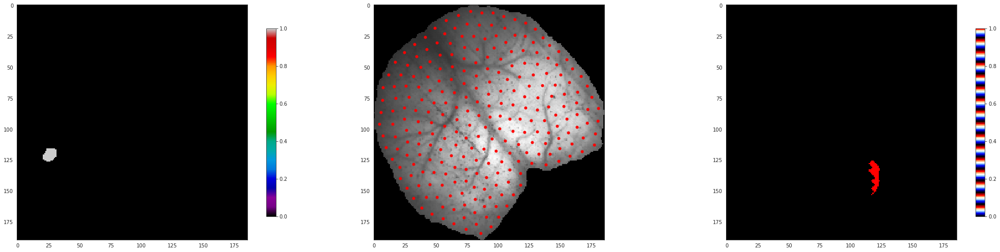
((load['mask'] == 1).astype(int) - (load['atlas_kmeans'] > 0)).sum()
0
((load['mask'] == 1).astype(int) - (load['atlas'] == 0)).sum()
11880
inconsistent_pixels = np.where(np.logical_and(load['mask'] == 1, load['atlas'] == 0))
inconsistent_pixels
(array([100, 106, 107, 108, 108, 109, 109, 109, 109, 110, 110, 110, 110,
110, 111, 111, 111, 111, 111, 111, 111, 112, 112, 112, 112, 112,
112, 112, 112, 112, 113, 113, 113, 113, 113, 113, 113, 113, 113,
114, 114, 114, 114, 114, 114, 114, 114, 114, 114, 115, 115, 115,
115, 115, 115, 115, 115, 115, 115, 116, 116, 116, 116, 116, 116,
116, 116, 116, 117, 117, 117, 117, 117, 117, 117, 117, 118, 118,
118, 118, 118, 119, 119, 119, 120, 135, 137, 138, 138, 139, 139,
139, 140, 140, 140, 141, 141, 141, 142, 142, 142, 142, 143, 143,
143, 143, 143, 144, 144, 144, 144, 145, 145, 146, 148, 149, 150,
153, 154, 154, 155, 155, 156, 156, 156, 157, 157, 158, 158, 159,
159, 159, 160, 160, 160, 161, 161, 161, 162, 162, 162, 163, 163,
163, 164, 164, 165, 165, 166, 166, 166, 167, 167, 167, 168, 168,
168, 169, 169, 169, 170, 171, 171, 171, 171, 172, 172, 172, 172,
172, 173, 173, 173, 173, 173, 173, 174, 174, 174, 174, 174, 175,
175, 175, 175, 177, 178, 179, 180, 181, 182, 182, 182, 182, 183,
183, 183, 183, 183, 183, 183, 183, 184, 184, 184, 184, 184, 184,
184, 184, 184, 184, 184, 184, 184, 184, 185, 185, 185, 185, 185,
185, 185, 185, 185, 185, 185, 185, 185, 186, 186, 186, 186, 186,
186, 187, 187, 187, 187, 187, 188, 188, 188, 188, 188, 189, 189,
189]),
array([ 0, 183, 182, 181, 182, 180, 181, 182, 183, 179, 180, 181, 182,
183, 177, 178, 179, 180, 181, 182, 183, 176, 177, 178, 179, 180,
181, 182, 183, 184, 175, 176, 177, 178, 179, 180, 181, 182, 183,
174, 175, 176, 177, 178, 179, 180, 181, 182, 183, 173, 174, 175,
176, 177, 178, 179, 180, 181, 182, 172, 173, 174, 175, 176, 177,
179, 180, 181, 170, 171, 172, 173, 174, 175, 176, 180, 170, 171,
172, 173, 174, 171, 172, 173, 172, 15, 16, 16, 17, 16, 17,
18, 17, 18, 19, 18, 19, 20, 18, 19, 20, 21, 18, 19,
20, 21, 22, 19, 20, 21, 22, 20, 21, 20, 21, 21, 22,
25, 25, 26, 26, 27, 26, 27, 28, 27, 28, 28, 29, 28,
29, 30, 29, 30, 31, 30, 31, 32, 31, 32, 33, 32, 33,
34, 33, 34, 34, 35, 34, 35, 36, 35, 36, 37, 36, 37,
38, 37, 38, 39, 103, 41, 102, 103, 104, 46, 47, 101, 102,
103, 45, 46, 47, 48, 102, 103, 45, 46, 47, 48, 102, 46,
47, 48, 49, 101, 100, 99, 98, 97, 66, 71, 77, 96, 70,
71, 72, 76, 77, 82, 83, 95, 70, 71, 72, 73, 75, 76,
77, 78, 81, 82, 83, 84, 93, 94, 74, 75, 76, 77, 78,
79, 80, 81, 82, 83, 84, 85, 92, 81, 82, 83, 84, 85,
91, 83, 84, 85, 86, 90, 84, 85, 86, 87, 89, 86, 87,
88]))
load['atlas'][inconsistent_pixels]
array([0, 0, 0, 0, 0, 0, 0, 0, 0, 0, 0, 0, 0, 0, 0, 0, 0, 0, 0, 0, 0, 0,
0, 0, 0, 0, 0, 0, 0, 0, 0, 0, 0, 0, 0, 0, 0, 0, 0, 0, 0, 0, 0, 0,
0, 0, 0, 0, 0, 0, 0, 0, 0, 0, 0, 0, 0, 0, 0, 0, 0, 0, 0, 0, 0, 0,
0, 0, 0, 0, 0, 0, 0, 0, 0, 0, 0, 0, 0, 0, 0, 0, 0, 0, 0, 0, 0, 0,
0, 0, 0, 0, 0, 0, 0, 0, 0, 0, 0, 0, 0, 0, 0, 0, 0, 0, 0, 0, 0, 0,
0, 0, 0, 0, 0, 0, 0, 0, 0, 0, 0, 0, 0, 0, 0, 0, 0, 0, 0, 0, 0, 0,
0, 0, 0, 0, 0, 0, 0, 0, 0, 0, 0, 0, 0, 0, 0, 0, 0, 0, 0, 0, 0, 0,
0, 0, 0, 0, 0, 0, 0, 0, 0, 0, 0, 0, 0, 0, 0, 0, 0, 0, 0, 0, 0, 0,
0, 0, 0, 0, 0, 0, 0, 0, 0, 0, 0, 0, 0, 0, 0, 0, 0, 0, 0, 0, 0, 0,
0, 0, 0, 0, 0, 0, 0, 0, 0, 0, 0, 0, 0, 0, 0, 0, 0, 0, 0, 0, 0, 0,
0, 0, 0, 0, 0, 0, 0, 0, 0, 0, 0, 0, 0, 0, 0, 0, 0, 0, 0, 0, 0, 0,
0, 0, 0, 0, 0, 0])
load['mask'][inconsistent_pixels]
array([ True, True, True, True, True, True, True, True, True,
True, True, True, True, True, True, True, True, True,
True, True, True, True, True, True, True, True, True,
True, True, True, True, True, True, True, True, True,
True, True, True, True, True, True, True, True, True,
True, True, True, True, True, True, True, True, True,
True, True, True, True, True, True, True, True, True,
True, True, True, True, True, True, True, True, True,
True, True, True, True, True, True, True, True, True,
True, True, True, True, True, True, True, True, True,
True, True, True, True, True, True, True, True, True,
True, True, True, True, True, True, True, True, True,
True, True, True, True, True, True, True, True, True,
True, True, True, True, True, True, True, True, True,
True, True, True, True, True, True, True, True, True,
True, True, True, True, True, True, True, True, True,
True, True, True, True, True, True, True, True, True,
True, True, True, True, True, True, True, True, True,
True, True, True, True, True, True, True, True, True,
True, True, True, True, True, True, True, True, True,
True, True, True, True, True, True, True, True, True,
True, True, True, True, True, True, True, True, True,
True, True, True, True, True, True, True, True, True,
True, True, True, True, True, True, True, True, True,
True, True, True, True, True, True, True, True, True,
True, True, True, True, True, True, True, True, True,
True, True, True, True, True, True, True, True, True,
True, True, True, True, True])
pixels
(array([179, 180, 180, 180, 181, 181, 181, 181, 181, 181, 182, 182, 182,
182, 182, 182, 182, 182, 182, 183, 183, 183, 183, 183, 183, 183,
183, 183, 183, 183, 184, 184, 184, 184, 184, 184, 184, 184, 184,
184, 184, 184, 185, 185, 185, 185, 185, 185, 185, 185, 185, 185,
185, 185, 185, 186, 186, 186, 186, 186, 186, 186, 186, 186, 186,
186, 187, 187, 187, 187, 187, 187, 187, 187, 188, 188, 188, 188,
188, 188, 189, 189, 189]),
array([88, 86, 87, 88, 84, 85, 86, 87, 88, 89, 82, 83, 84, 85, 86, 87, 88,
89, 90, 80, 81, 82, 83, 84, 85, 86, 87, 88, 89, 90, 80, 81, 82, 83,
84, 85, 86, 87, 88, 89, 90, 91, 80, 81, 82, 83, 84, 85, 86, 87, 88,
89, 90, 91, 92, 81, 82, 83, 84, 85, 86, 87, 88, 89, 90, 91, 83, 84,
85, 86, 87, 88, 89, 90, 84, 85, 86, 87, 88, 89, 86, 87, 88]))
config.labels
{1: 'R-Frontal pole, cerebral cortex (FRP,184)',
2: 'R-Primary motor area (MOp,985)',
3: 'R-Secondary motor area (MOs,993)',
4: 'R-Primary somatosensory area, nose (SSp-n,353)',
5: 'R-Primary somatosensory area, barrel field (SSp-bfd,329)',
6: 'R-Primary somatosensory area, lower limb (SSp-ll,337)',
7: 'R-Primary somatosensory area, mouth (SSp-m,345)',
8: 'R-Primary somatosensory area, upper limb (SSp-ul,369)',
9: 'R-Primary somatosensory area, trunk (SSp-tr,361)',
10: 'R-Primary somatosensory area, unassigned (SSp-un,182305689)',
11: 'R-Supplemental somatosensory area (SSs,378)',
12: 'R-Gustatory areas (GU,1057)',
13: 'R-Visceral area (VISC,677)',
14: 'R-Dorsal auditory area (AUDd,1011)',
15: 'R-Primary auditory area (AUDp,1002)',
16: 'R-Posterior auditory area (AUDpo,1027)',
17: 'R-Ventral auditory area (AUDv,1018)',
18: 'R-Anterolateral visual area (VISal,402)',
19: 'R-Anteromedial visual area (VISam,394)',
20: 'R-Lateral visual area (VISl,409)',
21: 'R-Primary visual area (VISp,385)',
22: 'R-Posterolateral visual area (VISpl,425)',
23: 'R-posteromedial visual area (VISpm,533)',
24: 'R-Anterior area (VISa,312782546)',
25: 'R-Laterointermediate area (VISli,312782574)',
26: 'R-Rostrolateral visual area (VISrl,417)',
27: 'R-Postrhinal area (VISpor,312782628)',
28: 'R-Anterior cingulate area, dorsal part (ACAd,39)',
29: 'R-Anterior cingulate area, ventral part (ACAv,48)',
30: 'R-Prelimbic area (PL,972)',
31: 'R-Infralimbic area (ILA,44)',
32: 'R-Orbital area, lateral part (ORBl,723)',
33: 'R-Orbital area, medial part (ORBm,731)',
34: 'R-Orbital area, ventrolateral part (ORBvl,746)',
35: 'R-Agranular insular area, dorsal part (AId,104)',
36: 'R-Agranular insular area, posterior part (AIp,111)',
37: 'R-Agranular insular area, ventral part (AIv,119)',
38: 'R-Retrosplenial area, lateral agranular part (RSPagl,894)',
39: 'R-Retrosplenial area, dorsal part (RSPd,879)',
40: 'R-Retrosplenial area, ventral part (RSPv,886)',
41: 'R-Temporal association areas (TEa,541)',
42: 'R-Perirhinal area (PERI,922)',
43: 'R-Ectorhinal area (ECT,895)',
44: 'R-Main olfactory bulb (MOB,507)',
45: 'R-Accessory olfactory bulb, glomerular layer (AOBgl,188)',
46: 'R-Accessory olfactory bulb, granular layer (AOBgr,196)',
47: 'R-Accessory olfactory bulb, mitral layer (AOBmi,204)',
48: 'R-Nucleus of the lateral olfactory tract, layer 3 (NLOT3,1139)',
49: 'R-Anterior olfactory nucleus (AON,159)',
50: 'R-Nucleus of the lateral olfactory tract, molecular layer (NLOT1,260)',
51: 'R-Postpiriform transition area (TR,566)',
52: 'R-Taenia tecta (TT,589)',
53: 'R-Cortical amygdalar area, anterior part (COAa,639)',
54: 'R-Cortical amygdalar area, posterior part (COAp,647)',
55: 'R-Piriform-amygdalar area (PAA,788)',
56: 'R-Dorsal peduncular area (DP,814)',
57: 'R-Piriform area (PIR,961)',
58: 'R-Main olfactory bulb (MOB,507)',
59: 'R-Field CA1 (CA1,382)',
60: 'R-Field CA2 (CA2,423)',
61: 'R-Field CA3 (CA3,463)',
62: 'R-Dentate gyrus, molecular layer (DG-mo,10703)',
63: 'R-Dentate gyrus, polymorph layer (DG-po,10704)',
64: 'R-Dentate gyrus, granule cell layer (DG-sg,632)',
65: 'R-Fasciola cinerea (FC,982)',
66: 'R-Subiculum (SUB,502)',
67: 'R-Parasubiculum (PAR,843)',
68: 'R-Entorhinal area, lateral part (ENTl,918)',
69: 'R-Entorhinal area, medial part, dorsal zone (ENTm,926)',
70: 'R-Entorhinal area, medial part, ventral zone (ENTmv,934)',
71: 'R-Postsubiculum (POST,1037)',
72: 'R-Presubiculum (PRE,1084)',
73: 'R-Claustrum (CLA,583)',
74: 'R-Endopiriform nucleus (EP,942)',
75: 'R-Lateral amygdalar nucleus (LA,131)',
76: 'R-Basolateral amygdalar nucleus, anterior part (BLAa,303)',
77: 'R-Basolateral amygdalar nucleus, posterior part (BLAp,311)',
78: 'R-Basomedial amygdalar nucleus (BMA,319)',
79: 'R-Basolateral amygdalar nucleus, ventral part (BLAv,451)',
80: 'R-Posterior amygdalar nucleus (PA,780)',
81: 'R-Caudoputamen (CP,672)',
82: 'R-Nucleus accumbens (ACB,56)',
83: 'R-Olfactory tubercle (OT,754)',
84: 'R-Lateral septal nucleus, caudal (caudodorsal) part (LSc,250)',
85: 'R-Septohippocampal nucleus (SH,333)',
86: 'R-Striatum-like amygdalar nuclei (sAMY,278)',
87: 'R-Lateral septal nucleus, rostral (rostroventral) part (LSr,258)',
88: 'R-Lateral septal nucleus, ventral part (LSv,266)',
89: 'R-Septofimbrial nucleus (SF,310)',
90: 'R-Fundus of striatum (FS,998)',
91: 'R-Globus pallidus, external segment (GPe,1022)',
92: 'R-Globus pallidus, internal segment (GPi,1031)',
93: 'R-Pallidum, caudal region (PALc,809)',
94: 'R-Magnocellular nucleus (MA,298)',
95: 'R-Substantia innominata (SI,342)',
96: 'R-Medial septal nucleus (MS,564)',
97: 'R-Triangular nucleus of septum (TRS,581)',
98: 'R-Diagonal band nucleus (NDB,596)',
99: 'R-Ventral anterior-lateral complex of the thalamus (VAL,629)',
100: 'R-Ventral medial nucleus of the thalamus (VM,685)',
101: 'R-Ventral posterolateral nucleus of the thalamus (VPL,718)',
102: 'R-Ventral posteromedial nucleus of the thalamus (VPM,733)',
103: 'R-Peripeduncular nucleus (PP,1044)',
104: 'R-Medial geniculate complex (MG,475)',
105: 'R-Dorsal part of the lateral geniculate complex (LGd,170)',
106: 'R-Lateral posterior nucleus of the thalamus (LP,218)',
107: 'R-Posterior complex of the thalamus (PO,1020)',
108: 'R-Suprageniculate nucleus (SGN,325)',
109: 'R-Anteroventral nucleus of thalamus (AV,255)',
110: 'R-Anteromedial nucleus (AM,127)',
111: 'R-Anterodorsal nucleus (AD,64)',
112: 'R-Lateral dorsal nucleus of thalamus (LD,155)',
113: 'R-Interanterodorsal nucleus of the thalamus (IAD,1113)',
114: 'R-Interanteromedial nucleus of the thalamus (IAM,1120)',
115: 'R-Intermediodorsal nucleus of the thalamus (IMD,59)',
116: 'R-Mediodorsal nucleus of thalamus (MD,362)',
117: 'R-Submedial nucleus of the thalamus (SMT,366)',
118: 'R-Paraventricular nucleus of the thalamus (PVT,149)',
119: 'R-Parataenial nucleus (PT,15)',
120: 'R-Nucleus of reuniens (RE,181)',
121: 'R-Rhomboid nucleus (RH,189)',
122: 'R-Paracentral nucleus (PCN,907)',
123: 'R-Central lateral nucleus of the thalamus (CL,575)',
124: 'R-Central medial nucleus of the thalamus (CM,599)',
125: 'R-Parafascicular nucleus (PF,930)',
126: 'R-Reticular nucleus of the thalamus (RT,262)',
127: 'R-Intergeniculate leaflet of the lateral geniculate complex (IGL,27)',
128: 'R-Ventral part of the lateral geniculate complex (LGv,178)',
129: 'R-Medial habenula (MH,483)',
130: 'R-Lateral habenula (LH,186)',
131: 'R-Subparafascicular nucleus, magnocellular part (SPFm,414)',
132: 'R-Subparafascicular nucleus, parvicellular part (SPFp,422)',
133: 'R-Subparafascicular area (SPA,609)',
134: 'R-Ventral posterolateral nucleus of the thalamus, parvicellular part (VPLpc,725)',
135: 'R-Ventral posteromedial nucleus of the thalamus, parvicellular part (VPMpc,741)',
136: 'R-Posterior limiting nucleus of the thalamus (POL,1029)',
137: 'R-Perireunensis nucleus (PR,1077)',
138: 'R-Periventricular zone (PVZ,157)',
139: 'R-Periventricular region (PVR,141)',
140: 'R-Lateral mammillary nucleus (LM,210)',
141: 'R-Medial mammillary nucleus (MM,491)',
142: 'R-Hypothalamic lateral zone (LZ,290)',
143: 'R-Tuberomammillary nucleus (TM,557)',
144: 'R-Paraventricular hypothalamic nucleus, descending division (PVHd,63)',
145: 'R-Anterior hypothalamic nucleus (AHN,88)',
146: 'R-Medial preoptic nucleus (MPN,515)',
147: 'R-Supramammillary nucleus (SUM,525)',
148: 'R-Ventromedial hypothalamic nucleus (VMH,693)',
149: 'R-Posterior hypothalamic nucleus (PH,946)',
150: 'R-Dorsal premammillary nucleus (PMd,980)',
151: 'R-Ventral premammillary nucleus (PMv,1004)',
152: 'R-Periventricular zone (PVZ,157)',
153: 'R-Periventricular region (PVR,141)',
154: 'R-Superior colliculus, optic layer (SCop,851)',
155: 'R-Superior colliculus, superficial gray layer (SCsg,842)',
156: 'R-Midbrain, sensory related (MBsen,339)',
157: 'R-Midbrain, motor related (MBmot,323)',
158: 'R-Superior colliculus, motor related, deep gray layer (SCdg,26)',
159: 'R-Superior colliculus, motor related, deep white layer (SCdw,42)',
160: 'R-Superior colliculus, motor related, intermediate white layer (SCiw,17)',
161: 'R-Superior colliculus, motor related, intermediate gray layer (SCig,10)',
162: 'R-Anterior pretectal nucleus (APN,215)',
163: 'R-Midbrain raphe nuclei (RAmb,165)',
164: 'R-Midbrain, behavioral state related (MBsta,348)',
165: 'R-Medial pretectal area (MPT,531)',
166: 'R-Nucleus of the optic tract (NOT,628)',
167: 'R-Nucleus of the posterior commissure (NPC,634)',
168: 'R-Olivary pretectal nucleus (OP,706)',
169: 'R-Posterior pretectal nucleus (PPT,1061)',
170: 'R-Midbrain, behavioral state related (MBsta,348)',
171: 'R-Midbrain, behavioral state related (MBsta,348)',
172: 'R-Nucleus of the lateral lemniscus (NLL,612)',
173: 'R-Principal sensory nucleus of the trigeminal (PSV,7)',
174: 'R-Superior olivary complex, periolivary region (POR,122)',
175: 'R-Superior olivary complex, medial part (SOCm,105)',
176: 'R-Superior olivary complex, lateral part (SOCl,114)',
177: 'R-Pons, motor related (P-mot,987)',
178: 'R-Pons, behavioral state related (P-sat,1117)',
179: 'R-Parabrachial nucleus (PB,867)',
180: 'R-Pons, behavioral state related (P-sat,1117)',
181: 'R-Pons, behavioral state related (P-sat,1117)',
182: 'R-Area postrema (AP,207)',
183: 'R-Dorsal cochlear nucleus (DCO,96)',
184: 'R-Ventral cochlear nucleus (VCO,101)',
185: 'R-Cuneate nucleus (CU,711)',
186: 'R-Gracile nucleus (GR,1039)',
187: 'R-External cuneate nucleus (ECU,903)',
188: 'R-Nucleus of the trapezoid body (NTB,642)',
189: 'R-Spinal nucleus of the trigeminal, caudal part (SPVC,429)',
190: 'R-Spinal nucleus of the trigeminal, interpolar part (SPVI,437)',
191: 'R-Spinal nucleus of the trigeminal, oral part (SPVO,445)',
192: 'R-Medulla, motor related (MY-mot,370)',
193: 'R-Nucleus ambiguus, dorsal division (AMBd,939)',
194: 'R-Nucleus ambiguus, ventral division (AMBv,143)',
195: 'R-Nucleus prepositus (PRP,169)',
196: 'R-Lateral vestibular nucleus (LAV,209)',
197: 'R-Medial vestibular nucleus (MV,202)',
198: 'R-Spinal vestibular nucleus (SPIV,225)',
199: 'R-Nucleus of Roller (NR,177)',
200: 'R-Medulla, behavioral state related (MY-sat,379)',
201: 'R-Superior vestibular nucleus (SUV,217)',
202: 'R-Nucleus of the solitary tract (NTS,651)',
203: 'R-Paragigantocellular reticular nucleus, dorsal part (PGRNd,970)',
204: 'R-Paragigantocellular reticular nucleus, lateral part (PGRNl,978)',
205: 'R-Medullary reticular nucleus, dorsal part (MDRNd,1098)',
206: 'R-Medullary reticular nucleus, ventral part (MDRNv,1107)',
207: 'R-Medulla, motor related (MY-mot,370)',
208: 'R-Paraflocculus (PFL,1041)',
209: 'R-Flocculus (FL,1049)',
210: 'R-Fastigial nucleus (FN,989)',
211: 'R-Interposed nucleus (IP,91)',
212: 'R-Dentate nucleus (DN,846)',
213: 'R-Lingula (I) (LING,912)',
214: 'R-Central lobule (CENT,920)',
215: 'R-Culmen (CUL,928)',
216: 'R-Declive (VI) (DEC,936)',
217: 'R-Folium-tuber vermis (VII) (FOTU,944)',
218: 'R-Pyramus (VIII) (PYR,951)',
219: 'R-Uvula (IX) (UVU,957)',
220: 'R-Nodulus (X) (NOD,968)',
221: 'R-Simple lobule (SIM,1007)',
222: 'R-Ansiform lobule (AN,1017)',
223: 'R-Paramedian lobule (PRM,1025)',
224: 'R-Copula pyramidis (COPY,1033)',
501: 'L-Frontal pole, cerebral cortex (FRP,184)',
502: 'L-Primary motor area (MOp,985)',
503: 'L-Secondary motor area (MOs,993)',
504: 'L-Primary somatosensory area, nose (SSp-n,353)',
505: 'L-Primary somatosensory area, barrel field (SSp-bfd,329)',
506: 'L-Primary somatosensory area, lower limb (SSp-ll,337)',
507: 'L-Primary somatosensory area, mouth (SSp-m,345)',
508: 'L-Primary somatosensory area, upper limb (SSp-ul,369)',
509: 'L-Primary somatosensory area, trunk (SSp-tr,361)',
510: 'L-Primary somatosensory area, unassigned (SSp-un,182305689)',
511: 'L-Supplemental somatosensory area (SSs,378)',
512: 'L-Gustatory areas (GU,1057)',
513: 'L-Visceral area (VISC,677)',
514: 'L-Dorsal auditory area (AUDd,1011)',
515: 'L-Primary auditory area (AUDp,1002)',
516: 'L-Posterior auditory area (AUDpo,1027)',
517: 'L-Ventral auditory area (AUDv,1018)',
518: 'L-Anterolateral visual area (VISal,402)',
519: 'L-Anteromedial visual area (VISam,394)',
520: 'L-Lateral visual area (VISl,409)',
521: 'L-Primary visual area (VISp,385)',
522: 'L-Posterolateral visual area (VISpl,425)',
523: 'L-posteromedial visual area (VISpm,533)',
524: 'L-Anterior area (VISa,312782546)',
525: 'L-Laterointermediate area (VISli,312782574)',
526: 'L-Rostrolateral visual area (VISrl,417)',
527: 'L-Postrhinal area (VISpor,312782628)',
528: 'L-Anterior cingulate area, dorsal part (ACAd,39)',
529: 'L-Anterior cingulate area, ventral part (ACAv,48)',
530: 'L-Prelimbic area (PL,972)',
531: 'L-Infralimbic area (ILA,44)',
532: 'L-Orbital area, lateral part (ORBl,723)',
533: 'L-Orbital area, medial part (ORBm,731)',
534: 'L-Orbital area, ventrolateral part (ORBvl,746)',
535: 'L-Agranular insular area, dorsal part (AId,104)',
536: 'L-Agranular insular area, posterior part (AIp,111)',
537: 'L-Agranular insular area, ventral part (AIv,119)',
538: 'L-Retrosplenial area, lateral agranular part (RSPagl,894)',
539: 'L-Retrosplenial area, dorsal part (RSPd,879)',
540: 'L-Retrosplenial area, ventral part (RSPv,886)',
541: 'L-Temporal association areas (TEa,541)',
542: 'L-Perirhinal area (PERI,922)',
543: 'L-Ectorhinal area (ECT,895)',
544: 'L-Main olfactory bulb (MOB,507)',
545: 'L-Accessory olfactory bulb, glomerular layer (AOBgl,188)',
546: 'L-Accessory olfactory bulb, granular layer (AOBgr,196)',
547: 'L-Accessory olfactory bulb, mitral layer (AOBmi,204)',
548: 'L-Nucleus of the lateral olfactory tract, layer 3 (NLOT3,1139)',
549: 'L-Anterior olfactory nucleus (AON,159)',
550: 'L-Nucleus of the lateral olfactory tract, molecular layer (NLOT1,260)',
551: 'L-Postpiriform transition area (TR,566)',
552: 'L-Taenia tecta (TT,589)',
553: 'L-Cortical amygdalar area, anterior part (COAa,639)',
554: 'L-Cortical amygdalar area, posterior part (COAp,647)',
555: 'L-Piriform-amygdalar area (PAA,788)',
556: 'L-Dorsal peduncular area (DP,814)',
557: 'L-Piriform area (PIR,961)',
558: 'L-Main olfactory bulb (MOB,507)',
559: 'L-Field CA1 (CA1,382)',
560: 'L-Field CA2 (CA2,423)',
561: 'L-Field CA3 (CA3,463)',
562: 'L-Dentate gyrus, molecular layer (DG-mo,10703)',
563: 'L-Dentate gyrus, polymorph layer (DG-po,10704)',
564: 'L-Dentate gyrus, granule cell layer (DG-sg,632)',
565: 'L-Fasciola cinerea (FC,982)',
566: 'L-Subiculum (SUB,502)',
567: 'L-Parasubiculum (PAR,843)',
568: 'L-Entorhinal area, lateral part (ENTl,918)',
569: 'L-Entorhinal area, medial part, dorsal zone (ENTm,926)',
570: 'L-Entorhinal area, medial part, ventral zone (ENTmv,934)',
571: 'L-Postsubiculum (POST,1037)',
572: 'L-Presubiculum (PRE,1084)',
573: 'L-Claustrum (CLA,583)',
574: 'L-Endopiriform nucleus (EP,942)',
575: 'L-Lateral amygdalar nucleus (LA,131)',
576: 'L-Basolateral amygdalar nucleus, anterior part (BLAa,303)',
577: 'L-Basolateral amygdalar nucleus, posterior part (BLAp,311)',
578: 'L-Basomedial amygdalar nucleus (BMA,319)',
579: 'L-Basolateral amygdalar nucleus, ventral part (BLAv,451)',
580: 'L-Posterior amygdalar nucleus (PA,780)',
581: 'L-Caudoputamen (CP,672)',
582: 'L-Nucleus accumbens (ACB,56)',
583: 'L-Olfactory tubercle (OT,754)',
584: 'L-Lateral septal nucleus, caudal (caudodorsal) part (LSc,250)',
585: 'L-Septohippocampal nucleus (SH,333)',
586: 'L-Striatum-like amygdalar nuclei (sAMY,278)',
587: 'L-Lateral septal nucleus, rostral (rostroventral) part (LSr,258)',
588: 'L-Lateral septal nucleus, ventral part (LSv,266)',
589: 'L-Septofimbrial nucleus (SF,310)',
590: 'L-Fundus of striatum (FS,998)',
591: 'L-Globus pallidus, external segment (GPe,1022)',
592: 'L-Globus pallidus, internal segment (GPi,1031)',
593: 'L-Pallidum, caudal region (PALc,809)',
594: 'L-Magnocellular nucleus (MA,298)',
595: 'L-Substantia innominata (SI,342)',
596: 'L-Medial septal nucleus (MS,564)',
597: 'L-Triangular nucleus of septum (TRS,581)',
598: 'L-Diagonal band nucleus (NDB,596)',
599: 'L-Ventral anterior-lateral complex of the thalamus (VAL,629)',
600: 'L-Ventral medial nucleus of the thalamus (VM,685)',
601: 'L-Ventral posterolateral nucleus of the thalamus (VPL,718)',
602: 'L-Ventral posteromedial nucleus of the thalamus (VPM,733)',
603: 'L-Peripeduncular nucleus (PP,1044)',
604: 'L-Medial geniculate complex (MG,475)',
605: 'L-Dorsal part of the lateral geniculate complex (LGd,170)',
606: 'L-Lateral posterior nucleus of the thalamus (LP,218)',
607: 'L-Posterior complex of the thalamus (PO,1020)',
608: 'L-Suprageniculate nucleus (SGN,325)',
609: 'L-Anteroventral nucleus of thalamus (AV,255)',
610: 'L-Anteromedial nucleus (AM,127)',
611: 'L-Anterodorsal nucleus (AD,64)',
612: 'L-Lateral dorsal nucleus of thalamus (LD,155)',
613: 'L-Interanterodorsal nucleus of the thalamus (IAD,1113)',
614: 'L-Interanteromedial nucleus of the thalamus (IAM,1120)',
615: 'L-Intermediodorsal nucleus of the thalamus (IMD,59)',
616: 'L-Mediodorsal nucleus of thalamus (MD,362)',
617: 'L-Submedial nucleus of the thalamus (SMT,366)',
618: 'L-Paraventricular nucleus of the thalamus (PVT,149)',
619: 'L-Parataenial nucleus (PT,15)',
620: 'L-Nucleus of reuniens (RE,181)',
621: 'L-Rhomboid nucleus (RH,189)',
622: 'L-Paracentral nucleus (PCN,907)',
623: 'L-Central lateral nucleus of the thalamus (CL,575)',
624: 'L-Central medial nucleus of the thalamus (CM,599)',
625: 'L-Parafascicular nucleus (PF,930)',
626: 'L-Reticular nucleus of the thalamus (RT,262)',
627: 'L-Intergeniculate leaflet of the lateral geniculate complex (IGL,27)',
628: 'L-Ventral part of the lateral geniculate complex (LGv,178)',
629: 'L-Medial habenula (MH,483)',
630: 'L-Lateral habenula (LH,186)',
631: 'L-Subparafascicular nucleus, magnocellular part (SPFm,414)',
632: 'L-Subparafascicular nucleus, parvicellular part (SPFp,422)',
633: 'L-Subparafascicular area (SPA,609)',
634: 'L-Ventral posterolateral nucleus of the thalamus, parvicellular part (VPLpc,725)',
635: 'L-Ventral posteromedial nucleus of the thalamus, parvicellular part (VPMpc,741)',
636: 'L-Posterior limiting nucleus of the thalamus (POL,1029)',
637: 'L-Perireunensis nucleus (PR,1077)',
638: 'L-Periventricular zone (PVZ,157)',
639: 'L-Periventricular region (PVR,141)',
640: 'L-Lateral mammillary nucleus (LM,210)',
641: 'L-Medial mammillary nucleus (MM,491)',
642: 'L-Hypothalamic lateral zone (LZ,290)',
643: 'L-Tuberomammillary nucleus (TM,557)',
644: 'L-Paraventricular hypothalamic nucleus, descending division (PVHd,63)',
645: 'L-Anterior hypothalamic nucleus (AHN,88)',
646: 'L-Medial preoptic nucleus (MPN,515)',
647: 'L-Supramammillary nucleus (SUM,525)',
648: 'L-Ventromedial hypothalamic nucleus (VMH,693)',
649: 'L-Posterior hypothalamic nucleus (PH,946)',
650: 'L-Dorsal premammillary nucleus (PMd,980)',
651: 'L-Ventral premammillary nucleus (PMv,1004)',
652: 'L-Periventricular zone (PVZ,157)',
653: 'L-Periventricular region (PVR,141)',
654: 'L-Superior colliculus, optic layer (SCop,851)',
655: 'L-Superior colliculus, superficial gray layer (SCsg,842)',
656: 'L-Midbrain, sensory related (MBsen,339)',
657: 'L-Midbrain, motor related (MBmot,323)',
658: 'L-Superior colliculus, motor related, deep gray layer (SCdg,26)',
659: 'L-Superior colliculus, motor related, deep white layer (SCdw,42)',
660: 'L-Superior colliculus, motor related, intermediate white layer (SCiw,17)',
661: 'L-Superior colliculus, motor related, intermediate gray layer (SCig,10)',
662: 'L-Anterior pretectal nucleus (APN,215)',
663: 'L-Midbrain raphe nuclei (RAmb,165)',
664: 'L-Midbrain, behavioral state related (MBsta,348)',
665: 'L-Medial pretectal area (MPT,531)',
666: 'L-Nucleus of the optic tract (NOT,628)',
667: 'L-Nucleus of the posterior commissure (NPC,634)',
668: 'L-Olivary pretectal nucleus (OP,706)',
669: 'L-Posterior pretectal nucleus (PPT,1061)',
670: 'L-Midbrain, behavioral state related (MBsta,348)',
671: 'L-Midbrain, behavioral state related (MBsta,348)',
672: 'L-Nucleus of the lateral lemniscus (NLL,612)',
673: 'L-Principal sensory nucleus of the trigeminal (PSV,7)',
674: 'L-Superior olivary complex, periolivary region (POR,122)',
675: 'L-Superior olivary complex, medial part (SOCm,105)',
676: 'L-Superior olivary complex, lateral part (SOCl,114)',
677: 'L-Pons, motor related (P-mot,987)',
678: 'L-Pons, behavioral state related (P-sat,1117)',
679: 'L-Parabrachial nucleus (PB,867)',
680: 'L-Pons, behavioral state related (P-sat,1117)',
681: 'L-Pons, behavioral state related (P-sat,1117)',
682: 'L-Area postrema (AP,207)',
683: 'L-Dorsal cochlear nucleus (DCO,96)',
684: 'L-Ventral cochlear nucleus (VCO,101)',
685: 'L-Cuneate nucleus (CU,711)',
686: 'L-Gracile nucleus (GR,1039)',
687: 'L-External cuneate nucleus (ECU,903)',
688: 'L-Nucleus of the trapezoid body (NTB,642)',
689: 'L-Spinal nucleus of the trigeminal, caudal part (SPVC,429)',
690: 'L-Spinal nucleus of the trigeminal, interpolar part (SPVI,437)',
691: 'L-Spinal nucleus of the trigeminal, oral part (SPVO,445)',
692: 'L-Medulla, motor related (MY-mot,370)',
693: 'L-Nucleus ambiguus, dorsal division (AMBd,939)',
694: 'L-Nucleus ambiguus, ventral division (AMBv,143)',
695: 'L-Nucleus prepositus (PRP,169)',
696: 'L-Lateral vestibular nucleus (LAV,209)',
697: 'L-Medial vestibular nucleus (MV,202)',
698: 'L-Spinal vestibular nucleus (SPIV,225)',
699: 'L-Nucleus of Roller (NR,177)',
700: 'L-Medulla, behavioral state related (MY-sat,379)',
701: 'L-Superior vestibular nucleus (SUV,217)',
702: 'L-Nucleus of the solitary tract (NTS,651)',
703: 'L-Paragigantocellular reticular nucleus, dorsal part (PGRNd,970)',
704: 'L-Paragigantocellular reticular nucleus, lateral part (PGRNl,978)',
705: 'L-Medullary reticular nucleus, dorsal part (MDRNd,1098)',
706: 'L-Medullary reticular nucleus, ventral part (MDRNv,1107)',
707: 'L-Medulla, motor related (MY-mot,370)',
708: 'L-Paraflocculus (PFL,1041)',
709: 'L-Flocculus (FL,1049)',
710: 'L-Fastigial nucleus (FN,989)',
711: 'L-Interposed nucleus (IP,91)',
712: 'L-Dentate nucleus (DN,846)',
713: 'L-Lingula (I) (LING,912)',
714: 'L-Central lobule (CENT,920)',
715: 'L-Culmen (CUL,928)',
716: 'L-Declive (VI) (DEC,936)',
717: 'L-Folium-tuber vermis (VII) (FOTU,944)',
718: 'L-Pyramus (VIII) (PYR,951)',
719: 'L-Uvula (IX) (UVU,957)',
720: 'L-Nodulus (X) (NOD,968)',
721: 'L-Simple lobule (SIM,1007)',
722: 'L-Ansiform lobule (AN,1017)',
723: 'L-Paramedian lobule (PRM,1025)',
724: 'L-Copula pyramidis (COPY,1033)'}
Finer scale¶
data_all = {}
for run in [1, 3, 5, 7]:
data_all[run] = load_organized_data(
folder='atlas-2048_unfiltered_unnormalized',#'filtered_low-0.001_high-4.000_ord-2_normalized',
config=config,
subject=6,
session=1,
run=run,
)
for run in [1, 3, 5, 7]:
x = np.zeros(data_all[run]['atlas_kmeans'].shape + (list(data_all[run]['ca'].values())[0].shape[-1],))
for key, time_series in data_all[run]['ca'].items():
num_nan = np.isnan(time_series).sum()
if num_nan > 0:
print(key, num_nan)
continue
x[data_all[run]['atlas_kmeans'] == key] = data_all[run]['ca'][key]
t = 1800
res = 10
_slice = x[..., t: t + res * 120]
vminmax = np.max(np.abs(_slice))
sns.set_style('white')
nrows, ncols = 12, 10
fig, axes = plt.subplots(nrows, ncols, figsize=(13.5, 17))
for idx in range(_slice.shape[-1] // res):
i, j = idx//ncols, idx%ncols
axes[i, j].imshow(_slice[..., idx * res], vmin=-vminmax, vmax=vminmax, cmap='bwr', interpolation='none')
axes[i, j].axis('off')
fig.tight_layout()
fig.suptitle('RUN: {:d}'.format(run), fontsize=20, y=1.02)
plt.show()
print('\n\n')
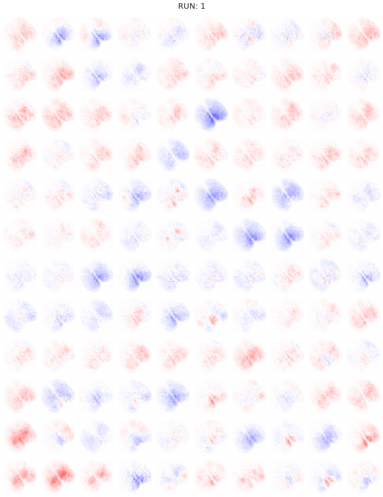
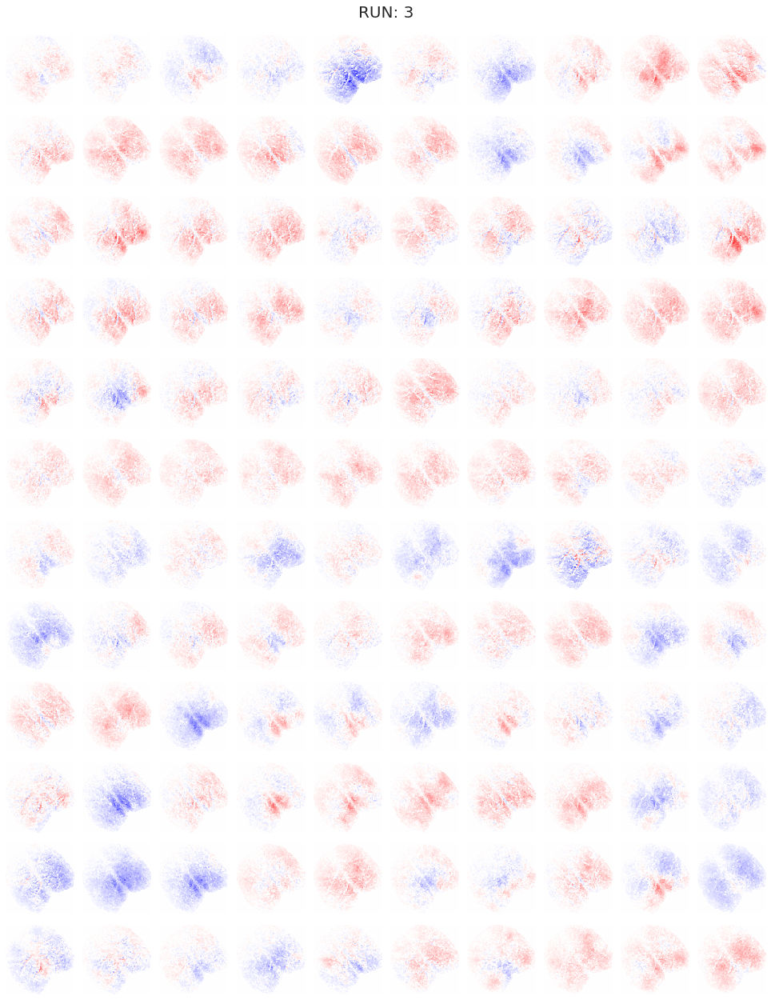
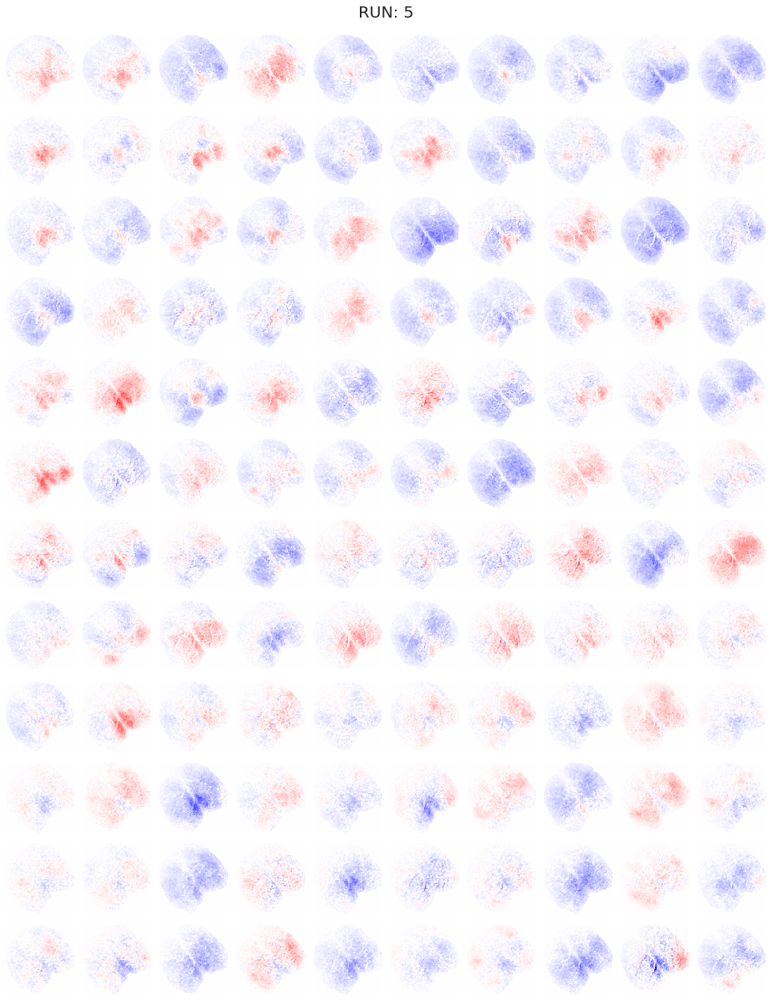
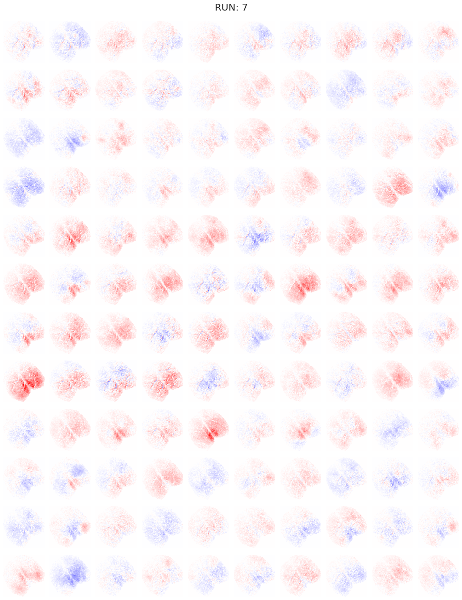
df = pd.DataFrame()
for run, load in data_all.items():
_df = pd.DataFrame.from_dict(data_all[run]['ca'])
print(run)
print(_df.describe().loc[['mean','std']].mean(1))
print('\n\n')
df = pd.concat([df, _df])
node_labels = df.columns.values.tolist()
node_labels = {i: lbl for i, lbl in enumerate(node_labels)}
df.describe()
1
mean 18.729764
std 94.845306
dtype: float64
3
mean -4.891482
std 69.669818
dtype: float64
5
mean 1.756480
std 83.384296
dtype: float64
7
mean 2.402372
std 67.622433
dtype: float64
| 1 | 2 | 3 | 4 | 5 | 6 | 7 | 8 | 9 | 10 | ... | 2039 | 2040 | 2041 | 2042 | 2043 | 2044 | 2045 | 2046 | 2047 | 2048 | |
|---|---|---|---|---|---|---|---|---|---|---|---|---|---|---|---|---|---|---|---|---|---|
| count | 22000.000000 | 22000.000000 | 22000.000000 | 22000.000000 | 22000.000000 | 22000.000000 | 22000.000000 | 22000.000000 | 22000.000000 | 22000.000000 | ... | 22000.000000 | 22000.000000 | 22000.000000 | 22000.000000 | 22000.000000 | 22000.000000 | 22000.000000 | 22000.000000 | 22000.000000 | 22000.000000 |
| mean | 2.539600 | 2.492350 | 2.402239 | 2.454531 | 2.459049 | 2.404069 | 2.464216 | 2.498584 | 2.448209 | 2.661953 | ... | 2.486342 | 2.648399 | 2.226385 | 3.090426 | 3.118287 | 3.467110 | 2.769338 | 3.547502 | 3.450560 | 3.686031 |
| std | 21.071502 | 21.204419 | 21.854102 | 23.874212 | 22.498945 | 20.225628 | 21.738131 | 24.914106 | 24.296303 | 24.568039 | ... | 35.609023 | 35.577926 | 35.091944 | 30.230269 | 31.308877 | 32.673118 | 29.448787 | 27.927970 | 27.071712 | 27.213138 |
| min | -81.164087 | -77.025150 | -81.385529 | -80.835804 | -79.285951 | -69.821959 | -72.667626 | -91.017195 | -93.195370 | -93.439453 | ... | -140.849974 | -129.244875 | -153.813993 | -102.539254 | -112.790723 | -113.327305 | -119.016298 | -104.273515 | -91.550085 | -87.709121 |
| 25% | -11.604598 | -11.684879 | -12.269345 | -13.818012 | -12.727596 | -11.154096 | -12.128446 | -14.345256 | -13.916741 | -13.730839 | ... | -21.251384 | -21.031502 | -21.487150 | -16.989568 | -17.887082 | -18.712641 | -16.996166 | -15.117875 | -14.789124 | -14.466057 |
| 50% | 2.135894 | 2.310709 | 2.156601 | 1.852993 | 2.287265 | 1.914692 | 2.131674 | 2.090989 | 2.212126 | 2.065520 | ... | 1.208709 | 0.643312 | 1.008846 | 2.009102 | 1.852542 | 1.593085 | 1.495724 | 2.515808 | 1.911372 | 2.174827 |
| 75% | 16.161393 | 16.123364 | 16.597939 | 17.762278 | 17.255288 | 15.379847 | 16.452061 | 18.522957 | 18.290226 | 18.506764 | ... | 24.823580 | 24.342867 | 24.836976 | 22.336606 | 22.875130 | 23.848172 | 21.132989 | 21.277934 | 20.259388 | 20.343965 |
| max | 103.121706 | 94.835361 | 93.820520 | 114.802198 | 120.430579 | 92.793580 | 105.466415 | 117.265454 | 116.200744 | 111.067106 | ... | 212.469960 | 200.734613 | 213.529444 | 181.323752 | 179.041833 | 169.631887 | 222.316534 | 165.333862 | 187.587778 | 169.166023 |
8 rows × 2048 columns
thresholds = [0.6, 0.7, 0.75, 0.8, 0.85]
corrs = get_corrs(df, thresholds=thresholds)
plt.imshow(corrs['pearson_corr'], cmap='nipy_spectral')
plt.colorbar()
<matplotlib.colorbar.Colorbar at 0x7fc3ba983d60>
from importlib import reload
from utils import plotting
reload(plotting)
from utils.plotting import *
fig, axes = plot_corrs(corrs['pearson'], corrs['spearman'], dpi=300)
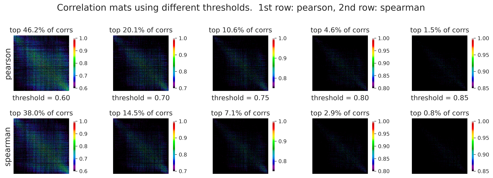
plot_corr_hist(
corr_list=[corrs['pearson_corr'], corrs['spearman_corr']],
labels=['pearson', 'spearman'],
colors=['C0', 'C3'],
)
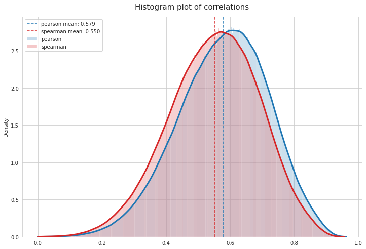
graphs = {th: nx.from_numpy_matrix(a) for th, a in corrs['spearman'].items()}
results_louvain = run_louvain(graphs[0.7], res=np.logspace(-1, 1, 1001))
selected_idxs = [390, 450, 560, 650]
plot_louvain_results(results_louvain, selected_idxs=selected_idxs)
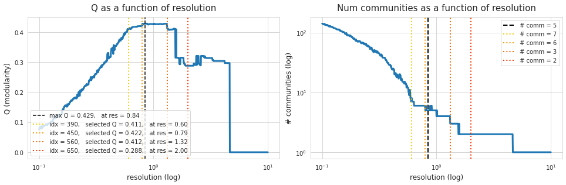
plot_louvain_communities(
pearson=corrs['pearson'],
spearman=corrs['spearman'],
atlas=load['atlas_kmeans'],
modularities=results_louvain['modularities'],
selected_idxs=selected_idxs,
pearson_th=0.7,
spearman_th=0.7,
figsize=(12, 4.5),
colorbar=False, )
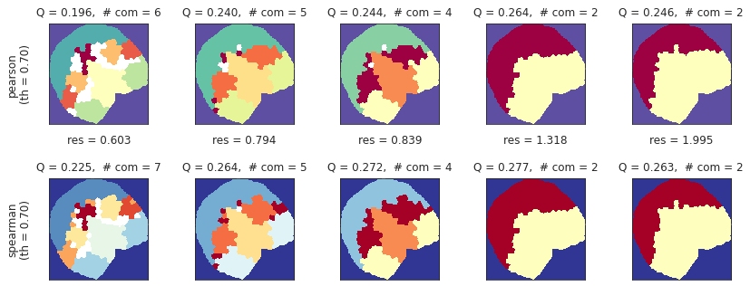
Network measures¶
field_names = ('subject', 'session', 'run', 'threshold', 'node_labels', 'adjacency', 'graph', 'cfg')
Data = collections.namedtuple(
typename='Data',
field_names=field_names,
)
config = Config()
thresholds = [0.70, 0.75, 0.80, 0.85, 0.90]
data_all = {}
for subject in tqdm(range(1, config.num_subjects + 1)):
for session in tqdm(range(1, config.num_sessions + 1), leave=False):
for run in range(1, config.num_runs + 1):
load = load_organized_data(
folder='unfiltered_normalized',
config=config,
subject=subject,
session=session,
run=run,
)
if load is None:
continue
df = pd.DataFrame.from_dict(load['ca'])
node_labels = df.columns.values.tolist()
node_labels = {i: lbl for i, lbl in enumerate(node_labels)}
corrs = get_corrs(df, thresholds=thresholds)
key = 'sub-SLC{:02d}'.format(subject)
key += '_ses-{:d}'.format(session)
key += '_run-{:d}'.format(run)
for th in thresholds:
a = corrs['spearman'][th]
g = nx.from_numpy_matrix(a)
data_all['{:s}_th-{:.2f}'.format(key, th)] = Data(
subject=subject,
session=session,
run=run,
threshold=th,
node_labels=node_labels,
adjacency=a,
graph=g,
cfg=mk_config_model(g, weighted=True),
)
Warning! File not found, moving on . . .
['sub-SLC03', 'ses-1', 'run-1', 'organized', 'ca']
Warning! File not found, moving on . . .
['sub-SLC05', 'ses-1', 'run-5', 'organized', 'ca']
Warning! File not found, moving on . . .
['sub-SLC06', 'ses-3', 'run-2', 'organized', 'ca']
Warning! File not found, moving on . . .
['sub-SLC08', 'ses-1', 'run-7', 'organized', 'ca']
Warning! File not found, moving on . . .
['sub-SLC10', 'ses-3', 'run-1', 'organized', 'ca']
# network measures
from networkx.algorithms.cluster import transitivity, average_clustering
from networkx.algorithms.assortativity import degree_pearson_correlation_coefficient
from networkx.algorithms.efficiency_measures import global_efficiency, local_efficiency
from networkx.algorithms.approximation.clique import large_clique_size
from networkx.algorithms.shortest_paths.generic import average_shortest_path_length
measures_df = pd.DataFrame()
dict_list = []
for k, data in tqdm(data_all.items()):
# nodes, degrees = list(zip(*g.degree()))
num_nodes = len(data.node_labels)
# the real graph
_avg_clustering = average_clustering(data.graph, weight='weight')
_local_efficiency = local_efficiency(data.graph)
_large_clique_ratio = large_clique_size(data.graph) / num_nodes
try:
_avg_shortest_path_len = average_shortest_path_length(data.graph, weight='weight')
except:
_avg_shortest_path_len = np.nan
_global_efficiency = global_efficiency(data.graph)
_degree_corr_coef = degree_pearson_correlation_coefficient(data.graph, weight='weight')
data_dict = {
'tag': ['real'] * 6,
'subject': [data.subject] * 6,
'session': [data.session] * 6,
'run': [data.run] * 6,
'threshold': [data.threshold] * 6,
'num_regions': [num_nodes] * 6,
'lbl': [
'avg_clustering',
'local_efficiency',
'large_clique_ratio',
'avg_shortest_path_len',
'global_efficiency',
'degree_corr_coef', # assortativity
],
'val': [
_avg_clustering,
_local_efficiency,
_large_clique_ratio,
_avg_shortest_path_len,
_global_efficiency,
_degree_corr_coef,
],
}
dict_list.append(data_dict)
# configuration model
_avg_clustering = average_clustering(data.cfg, weight='weight')
_local_efficiency = local_efficiency(data.cfg)
_large_clique_ratio = large_clique_size(data.cfg) / num_nodes
try:
_avg_shortest_path_len = average_shortest_path_length(data.cfg, weight='weight')
except:
_avg_shortest_path_len = np.nan
_global_efficiency = global_efficiency(data.cfg)
_degree_corr_coef = degree_pearson_correlation_coefficient(data.cfg, weight='weight')
data_dict = {
'tag': ['cfg'] * 6,
'subject': [data.subject] * 6,
'session': [data.session] * 6,
'run': [data.run] * 6,
'threshold': [data.threshold] * 6,
'num_regions': [num_nodes] * 6,
'lbl': [
'avg_clustering',
'local_efficiency',
'large_clique_ratio',
'avg_shortest_path_len',
'global_efficiency',
'degree_corr_coef', # assortativity
],
'val': [
_avg_clustering,
_local_efficiency,
_large_clique_ratio,
_avg_shortest_path_len,
_global_efficiency,
_degree_corr_coef,
],
}
dict_list.append(data_dict)
measures_df = pd.DataFrame.from_dict(merge_dicts(dict_list))
measures_df
| tag | subject | session | run | threshold | num_regions | lbl | val | |
|---|---|---|---|---|---|---|---|---|
| 0 | real | 1 | 1 | 1 | 0.7 | 66 | avg_clustering | 0.609992 |
| 1 | real | 1 | 1 | 1 | 0.7 | 66 | local_efficiency | 0.839339 |
| 2 | real | 1 | 1 | 1 | 0.7 | 66 | large_clique_ratio | 0.378788 |
| 3 | real | 1 | 1 | 1 | 0.7 | 66 | avg_shortest_path_len | NaN |
| 4 | real | 1 | 1 | 1 | 0.7 | 66 | global_efficiency | 0.699184 |
| ... | ... | ... | ... | ... | ... | ... | ... | ... |
| 12295 | cfg | 10 | 3 | 7 | 0.9 | 62 | local_efficiency | 0.066340 |
| 12296 | cfg | 10 | 3 | 7 | 0.9 | 62 | large_clique_ratio | 0.048387 |
| 12297 | cfg | 10 | 3 | 7 | 0.9 | 62 | avg_shortest_path_len | NaN |
| 12298 | cfg | 10 | 3 | 7 | 0.9 | 62 | global_efficiency | 0.207673 |
| 12299 | cfg | 10 | 3 | 7 | 0.9 | 62 | degree_corr_coef | 0.011740 |
12300 rows × 8 columns
_ths = measures_df.threshold.unique().tolist()
_lbls = measures_df.lbl.unique().tolist()
sns.set_style('whitegrid')
fig, axes = plt.subplots(nrows=len(_ths), ncols=len(_lbls), figsize=(15, 8), sharey='col', sharex='all')
for i, th in enumerate(_ths):
for j, lbl in enumerate(_lbls):
selected_df = measures_df.loc[(measures_df.threshold == th) & (measures_df.lbl == lbl)]
sns.boxplot(data=selected_df, y='val', x='tag', hue='tag', ax=axes[i, j])
axes[i, j].legend().set_visible(False)
axes[i, j].set_xlabel('')
if i == 0:
axes[i, j].set_title('{:s}\n'.format(lbl), fontsize=10)
if j == 0:
axes[i, j].set_ylabel('thres: {:.2f}\n'.format(th), fontsize=10)
else:
axes[i, j].set_ylabel('')
fig.savefig('net_measures.pdf', dpi=200)
fig.tight_layout()
plt.show()
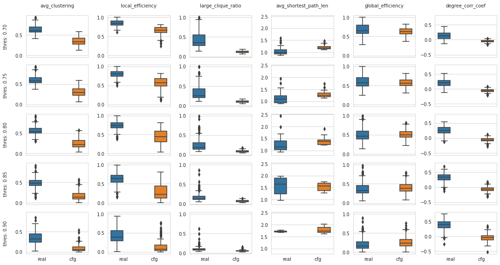
# TODO: make this general
def plot_louvain_communities(
graphs: list,
# pearson: dict,
# spearman: dict,
atlas: np.ndarray,
# modularities: dict,
# selected_idxs: list,
# pearson_th: float = 0.7,
# spearman_th: float = 0.8,
figsize=(12, 4.5),
colorbar=False, ):
# x0, y0 = tuple(zip(*modularities.items()))
# best_idx = np.argmax(y0)
# max_mod = y0[best_idx]
sns.set_style('white')
plot_idxs = sorted(selected_idxs + [best_idx])
fig, axes = plt.subplots(2, len(plot_idxs), figsize=figsize)
for ii, idx in enumerate(plot_idxs):
# g = nx.from_numpy_matrix(spearman[spearman_th])
coms = cdlib_algorithms.louvain(
g_original=g,
weight='weight',
resolution=best_idx[idx],
randomize=False,
)
partition = convert('community', 'partition', community=coms.communities)
output = filter_islands(partition, atlas, node_labels, min_com_size=3)
# comm_mat, comm_dict = filter_islands(partition, labels, scale=size, min_com_size=5)
q = nx_comm.modularity(g, communities=coms.communities)
im = axes[0, ii].imshow(output['comm_mat'], cmap='RdYlBu_r', interpolation='none')
if colorbar:
plt.colorbar(im, ax=axes[0, ii], shrink=0.7)
msg = 'res = {:.3f}\n\nQ = {:.3f}, # com = {:d}'
msg = msg.format(x0[idx], q, len(np.unique(comm_mat[comm_mat>-1])))
axes[0, ii].set_title(msg, y=1.03)
g = nx.from_numpy_matrix(pearson[0.8])
partition = community_louvain.best_partition(g, resolution=x0[idx], random_state=42)
comm_mat, comm_dict = filter_islands(partition, labels, scale=size, min_com_size=5)
q = nx_comm.modularity(g, communities=comm_dict.values())
im = axes[1, ii].imshow(comm_mat, cmap='Spectral_r', interpolation='none')
if colorbar:
plt.colorbar(im, ax=axes[1, ii], shrink=0.7)
msg = 'Q = {:.3f}, # com = {:d}'
msg = msg.format(q, len(np.unique(comm_mat[comm_mat>-1])))
axes[1, ii].set_title(msg, y=1.03)
if ii == 0:
axes[0, ii].set_ylabel('spearman\n(th = {:.2f})\n'.format(spearman_th), fontsize=12)
axes[1, ii].set_ylabel('pearson\n(th = {:.2f})\n'.format(pearson_th), fontsize=12)
for j in range(2):
axes[j, ii].set_xticks([])
axes[j, ii].set_yticks([])
fig.tight_layout()
plt.show()
return